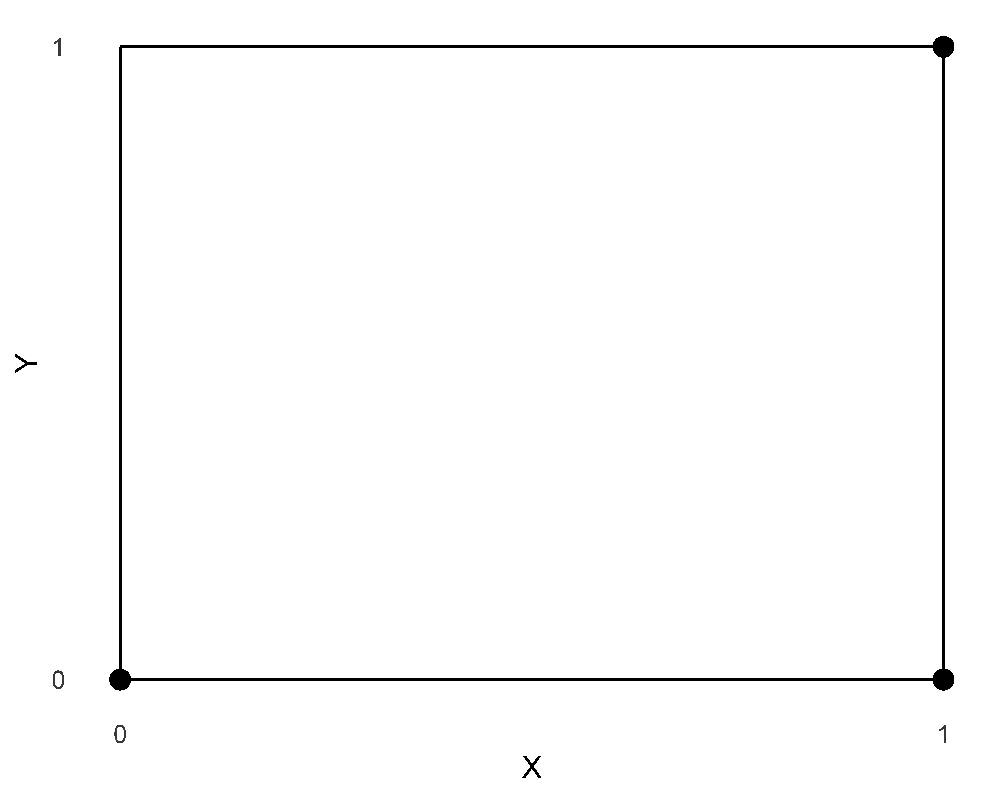
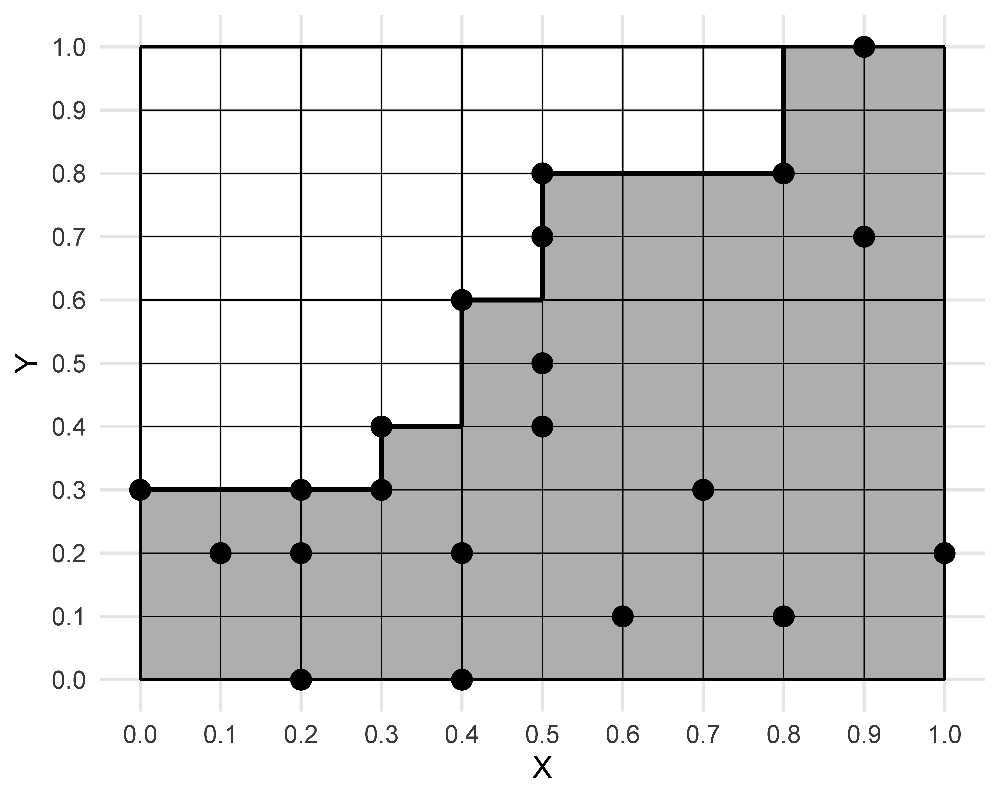
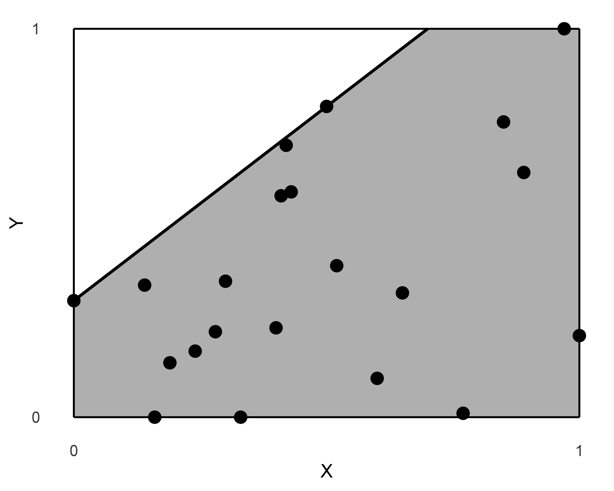
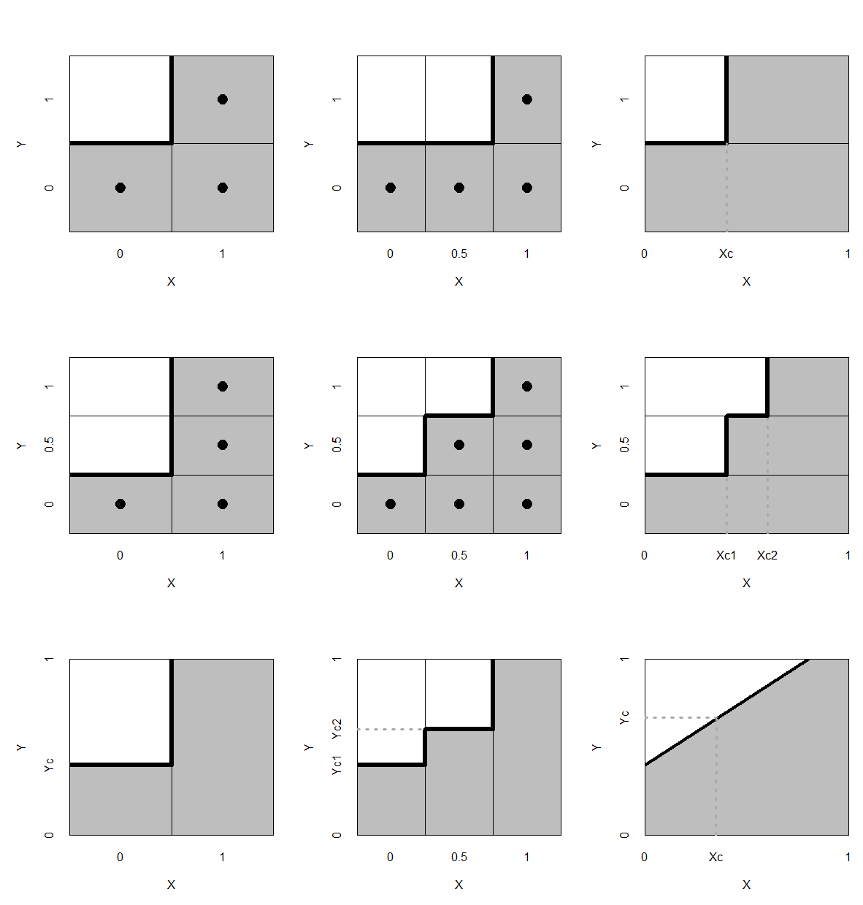
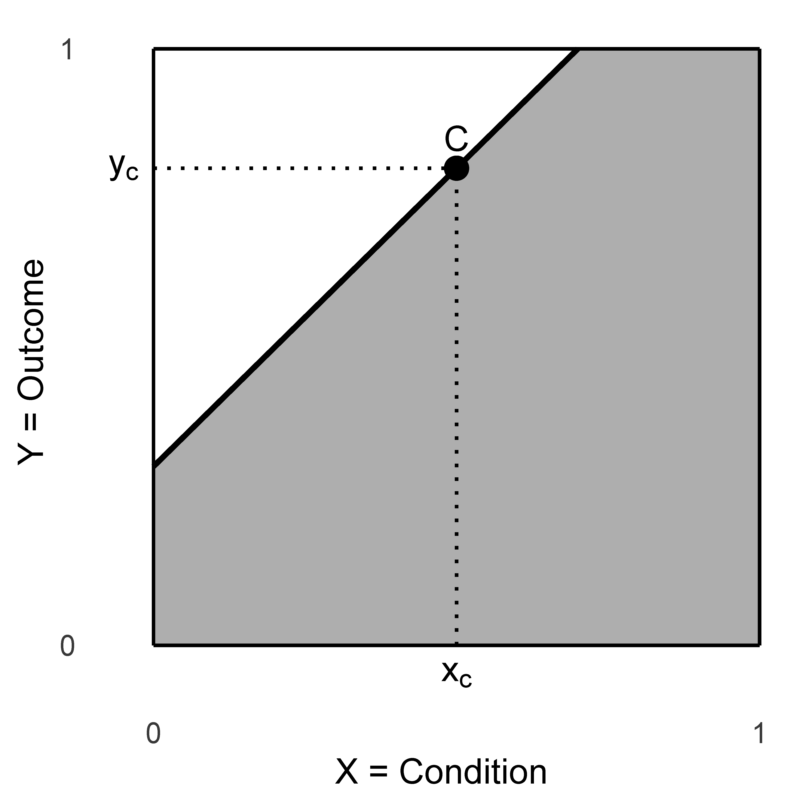

Necessary Condition Analysis - NCA
Principles and Application
© Jan Dul
Version 1.0.0. First pubished March 10, 2026. Last update: March 14, 2026
Refer to the book as: Dul, J. (2026). Necessary Condition Analysis - NCA: Principles and Application. Chapman & Hall/CRC Press.
Preface
“Is coffee a necessary condition for you?” Someone asked me this question after hearing that I had taken time away in Italy to focus on writing my book, and that I like Italy’s coffee culture. “No, it is not; it only helps.” Focus, time, perseverance, and several other things are true necessary conditions. Without any of them, the book would not exist.
And here it is! In the book I present the principles of Necessary Condition Analysis (NCA) and their application in empirical studies in research and practice. NCA is an approach that uses necessity causal logic to identify necessary conditions from data. The core idea is that a necessary condition must be present to make the outcome possible, and that its absence guarantees the absence of the outcome. Compensation is not possible.
My intention with this book is to help researchers, data analysts, practitioners, and others develop a deeper understanding of the NCA approach and apply it effectively and with high-quality standards. The book brings together the fundamentals of NCA and integrates the most recent methodological advancements and tools. It synthesizes ideas from my earlier publications that describe NCA at introductory levels (e.g., Dul, 2016b, 2020) as well as more advanced treatments (Dul, Van der Laan, et al., 2020; Dul, 2021, 2024a), while also introducing more background, new topics and recent developments. From 2021 to 2026, a regularly updated online predecessor of this book was available (Dul, 2021), which is now archived and integrated into the present book.
The first chapter of this book provides a general introduction to the possibilities and current use of NCA. Next, Part I contains five chapters on the principles of NCA, covering NCA’s causality, theory, mathematics, statistics, and its credibility for identifying necessity from data. Part II has six chapters about the application of these principles in empirical studies discussing NCA’s hypothesis formulation, data collection, data analysis, reporting, and how to apply NCA in multimethod research and in practice. I finish the book with a summary and a personal reflection.
The book’s content expresses my current understanding and interpretation of NCA. NCA develops over time, just like other methodological approaches do. As NCA is applied more widely, new questions, topics, insights, and ideas will emerge. An online version of the book with updates and additional materials is available via the book-page: https://jandul.github.io/NCA/. For the physical version of the book see Dul (2026).
I hope this book serves those who wish to gain a comprehensive understanding of the principles of NCA and their application, both in academic research and practical contexts.
Enjoy discovering and applying NCA!
Leiden, March 2026
Acknowledgements
I created NCA during a long process that spans more than a decade. NCA and the content of this book are not only the result of my own thinking and reading but also of many discussions with fellow researchers during in person and online meetings, at conferences, workshops, seminars, webinars, and in email exchanges. These interactions have played an important role in shaping NCA.
I wish to express my gratitude to the universities and other research organizations that invited me to deliver NCA seminars and workshops, both in its early years and more recently. These engagements enabled valuable face-to-face discussions that contributed to the development of NCA. I would like to mention the following institutions in alphabetical order: AGH University of Krakow (Poland), Bocconi University (Italy), Chalmers University (Sweden), Deakin University (Australia), Eindhoven University of Technology (Netherlands), Erasmus University (Netherlands), Federal University of Pernambuco (Brazil), George Washington University (USA), Helmut Schmidt University (Germany), INSEAD Business School (France), Jagiellonian University (Poland), LUISS (Italy), Mines Paris Tech (France), Nottingham University (UK), Oslo University (Norway), Oxford University (UK), Penn State University (USA), Radboud University of Nijmegen (Netherlands), RIVM (Netherlands), Tilburg University (Netherlands), University of Amsterdam (Netherlands), TNO (Netherlands), University of Bayreuth (Germany), University of Beira Interior (Portugal), University of Bologna (Italy), University of Coimbra (Portugal), University of Côte d’Azur (France), University of Durham (UK), University of Groningen (Netherlands), University of Kassel (Germany), University of Lincoln (UK), University of Maastricht (Netherlands), University of Paris (France), University of Porto (Portugal), University of Sevilla (Spain), University of Trento (Italy), University of Valencia (Spain), and Wroclaw University of Economics and Business (Poland).
I would also like to express my special appreciation to the Rotterdam School of Management at Erasmus University (Netherlands). Since the incubation of NCA, the school has supported me in developing and disseminating NCA. In particular, I wish to thank Erik van Raaij and Finn Wynstra for their enduring support.
I extend my acknowledgements to the dedicated team of NCA ambassadors and supporters who have contributed in different roles to the dissemination and advancement of this approach, ranging from student assistants to co-authors and co-developers: Jorick Alberga, Florence Allard-Poesie, Tatiana Andreeva, Joost Baart, Gijs van Biezen, Ruben Blom, Stefan Breet, Jon Bokrantz, Govert Buijs, Silvia Dello Russo, Monique van Donzel, Ger Haan, Tony Hak\(^\dagger\), Sven Hauff, Patrycja Klimas, Wilfred Knol, Roelof Kuik, Erwin van der Laan\(^\dagger\), Wangoo Lee, Igor Marchetti, Magdalena Marczewska, Justine Massu, Indy Oostrom, Erik van Raaij, Henk van Rhee, Nicole Richter, Krista Schellevis, Chloé Schwitzgebel, Daniele Spinelli, Zsófia Tóth, and Caroline Witte. Their support greatly accelerated the adoption of NCA in research.
Throughout the development of NCA, I engaged in extensive and ongoing discussions with numerous scholars and practitioners regarding the positioning of NCA in relation to mainstream approaches. In particular, I learned a lot from my conversations with Gary Goertz, regarding the positioning of NCA vis-à-vis regression analysis and statistics; Barbara Vis and Claude Rubinson on using NCA within the context of QCA; Oskar Kosch on the relationship between NCA and machine learning; Roelof Kuik on the detailed mathematical and statistical foundations of NCA, and Ger Haan on strategies for making NCA appealing to practitioners.
Finally, I would like to thank Bob Bastian, Gijs van Biezen, Jon Bokrantz, Patrycja Klimas, Roelof Kuik, Igor Marchetti, and José Luis Roldán for commenting on a draft version of this book.
Thank you all. Without your help, NCA would not be what it is today.
Chapter 1 Introduction
NCA is a methodological approach that uses a necessity causal perspective for identifying necessary conditions from data. Necessity causal logic in NCA implies that if a certain level of the condition is not present, a certain level of the outcome will not occur: If not \(X\), then not \(Y\). No other factor can compensate for the absence of the necessary condition (or a required level of it). The necessary condition allows the outcome to exist, but does not produce it.1 A necessary condition operates independently of the rest of the causal structure and serves as a ‘critical success factor’ or ‘must-have’. When absent, it creates a ‘bottleneck’ or ‘constraint’ that prevents the target outcome, which cannot be compensated by other factors. For example, a student must have a high school diploma for admission to a university. Without such a diploma, the student will not be admitted. Other factors like a student’s high motivation cannot compensate for the lack of a diploma.
Necessity causal logic and NCA differ from sufficiency causal logic and related methods. In sufficiency causal logic the condition produces the outcome: if \(X\), then \(Y\). A single factor may be sufficient for the outcome, for example when students graduate, they receive a diploma. Often, not a single factor but a combination of factors (a ‘configuration’) may be sufficient for the outcome: if [combination of \(X\)’s], then \(Y\). A university diploma alone is not sufficient for admission to a PhD program; however, combining it with strong motivation, good grades, and a recommendation letter will secure it. Such a configurational sufficiency logic is used in methodologies and frameworks like Rothman’s Sufficient-Component Cause model in medicine (SCC, Rothman, 1976), Wright’s Necessary Element of a Sufficient Set in law (NESS, Wright, 1985), and Ragin’s Qualitative Comparative Analysis in the social sciences (QCA, Ragin, 1987).
Necessity causal logic also differs from probabilistic causal sufficiency logic where the single factor is a ‘contributing cause’ that helps to produce the outcome and contributes to the outcome ‘on average’: ‘if \(X\), then probably \(Y\)’. Highly motivated people are more likely to be admitted to a PhD program than those with lower motivation, although there are highly motivated people who are not admitted and less motivated people who are admitted. Such a probabilistic causal sufficiency logic is applied in statistical methodologies for causal inference, such as in Pearl’s Directed Acyclic Graphs (DAGs) and do-operator approach (Pearl, 2009) and Angrist et al.’s Instrumental Variable approach (IV, Angrist et al., 1996).
The different causal lenses (single necessity causes, configurational sufficiency causes, and single probabilistic sufficiency causes) offer fundamentally distinct perspectives on causality. These lenses reflect different theoretical expectations (hypotheses) about how outcomes arise. This means that phenomena and data can be approached with different causal lenses (Chapter 2). The choice of lens may be guided by the specific nature of the phenomenon, the study question, or the analyst’s theoretical priorities2. For instance, if the question is whether a certain resource (e.g., access to capital) is required for a firm to enter a market, a necessity lens is appropriate. This lens helps identify bottleneck factors: conditions that must be in place for success. In contrast, if the aim is to identify combinations of national conditions that are sufficient for strong climate policy commitment (e.g., public support + high income, or climate risk + high fossil fuel dependence), a configurational sufficiency perspective, as used in QCA, may be appropriate. This approach assumes that different, non-overlapping pathways can each lead to the same outcome. If the goal is to understand whether self-efficacy increases the likelihood of engaging in a behavior, a probabilistic sufficiency lens is fitting. This approach helps estimate how much more likely the outcome is when a cause is present.
No lens is inherently superior; each has unique strengths and limitations. Thus, there are no better or worse lenses; there are no more or less relevant lenses. These lenses are different and shed different light on the same issues. What matters is that the chosen lens aligns with the goals of the study, the nature of the causal claim being made, and indeed the preference of the analyst. Once a causal lens is selected, it is essential to apply a methodological approach that matches the logic of that lens, ensuring theory–method fit, which is essential for the credibility and usefulness of the findings (Chapter 11).
This book’s emphasis on causality has both theoretical and practical reasons. Theoretically, scientific theories aim to explain why outcomes occur, not merely to describe patterns of co-occurrence (Chapters 3 and 7). Practically, changing or influencing an outcome requires intervention on causes of the outcome, not on co-occurring factors (Chapter 12). The assumption that \(X\) is a necessary cause of \(Y\) implies the assumption that \(X\) temporally precedes \(Y\) (Chapter 2).
NCA is an approach that is specifically designed to analyze necessity. It has two intertwined parts: a ‘soft’ part and a ‘hard’ part. The soft part is NCA’s soul: the causal perspective of necessity (NCA methodology). The hard part is NCA’s data analysis method (NCA method) that fits this perspective. Therefore, the term ‘NCA’ refers to a combination of the NCA methodology with its causal necessity perspective, and the corresponding NCA method for analyzing data.3 NCA’s necessity causal lens extends beyond common binary conditional necessity logic. Specifically, NCA adds causal reasoning to conditional logic, incorporates a continuous view on necessity, and permits exceptions (the ‘typicality’ perspective, see Chapter 2).
The book is organized as follows. Part I discusses the methodological principles of NCA, explaining its causality (e.g., compared to other causal perspectives), theory (e.g., main elements of a necessity theory, different types of necessity theories), mathematics (e.g., mathematical estimation of ceiling line, NCA parameters such as effect size, and measures of fit) and statistics (e.g., NCA’s null hypothesis tests, Monte Carlo simulations with NCA), and NCA’s credibility to identify necessity (e.g., using statistical and empirical criteria).
Part II of the book outlines how to conduct NCA. Specifically, this part discusses NCA’s hypothesis formulation, data collection, data analysis, reporting, how to apply NCA in a multimethod study, and how NCA can be used in practice. The book concludes with a summary and personal reflection on 10 years of NCA, and Part III provides additional materials.
With its innovative approach to causality and data analysis, NCA has rapidly entered the social, medical, and technical sciences.4 The publication in 2016 of NCA’s core paper (Dul, 2016b) marks the start of NCA, although proto-versions of NCA were introduced earlier (Dul et al., 2010; Dul & Hak, 2008).5 Subsequently, several extensions were developed, including a statistical significance test (Dul, Van der Laan, et al., 2020), and specialized software (Appendix B). Various publications, such as a textbook (Dul, 2020) and an online book (Dul, 2021) with practical guidelines on applying the method were developed to facilitate the understanding and dissemination of NCA. Furthermore, publications introducing and summarizing NCA have emerged across various fields of business and management, including Human Resource Management (Hauff et al., 2021), Marketing and Sales (Conde, 2025; Dul, Hauff, et al., 2021), Tourism Management (Tóth et al., 2019), Entrepreneurship (Linder et al., 2023), Supply Chain Management (Bokrantz & Dul, 2023), and International Business (Richter & Hauff, 2022). Also outside the business and management field, the method was introduced in fields such as Public Health (Greco et al., 2022), Clinical Psychology (Marchetti et al., 2026), Education (Tynan et al., 2020), and Creativity (Dul, Karwowski, et al., 2020).
Editors of academic journals have recognized the value of NCA by publishing editorial comments on the approach (e.g., Dul, 2025; Fainshmidt et al., 2020; Hernaus & Černe, 2022; Robinson et al., 2022; Sarstedt & Liu, 2023). Review articles (e.g., Aguinis et al., 2020; Boon et al., 2019; Dabić et al., 2021; Del Sordo & Zattoni, 2025; Frazier et al., 2017; Rozenkowska, 2023) and a plethora of journal articles suggest using NCA in future studies, for example, in the fields of education (e.g., Credé & Tynan, 2021), human resource management (e.g., Hauff, 2021; Parker & Knight, 2024), information systems (e.g., Sharma et al., 2024), international business/management (e.g., Richter et al., 2022; Zahoor et al., 2023), marketing (e.g., Guenther et al., 2023; Jovanovic & Morschett, 2022), operations and supply chain management (e.g., Acquah et al., 2023), strategy (e.g., Bouncken et al., 2020; Deist et al., 2023; Klimas et al., 2023; Ogundipe et al., 2022), and tourism and hospitality (e.g., Becker et al., 2023). At the time of writing this book, hundreds of articles that apply NCA have been published already. The number of publications in ‘Web of Science’ ranked journals6 that apply NCA has increased steadily. Appendix C shows these articles that have appeared through the end of 2025.
Published articles use NCA as the sole or primary method (Appendix C; Table ??), or combine NCA in a multimethod study (Chapter 11) with Qualitative Comparative Analysis (QCA, Table ??) or with regression-based methods. Examples of regression-based methods include multiple linear regression (MLR, Table ??) and structural equation modeling (SEM, Tables ?? and ??). NCA is also combined with a variety of other methods (Tables ?? and ??). Although the number of articles with NCA has grown rapidly, NCA is not always applied according to minimum standards (Chapter 10, Dul et al., 2023), and several misconceptions have been published.7 Therefore, the main goal of this book is to promote proper understanding and high-quality application of NCA.
Many articles that apply NCA conclude that necessity was identified, although the evidence is not always convincing. Other articles that apply NCA concluded that necessity was not found (e.g., Batey et al., 2021; Golini et al., 2016; Gu et al., 2022; Luo et al., 2022; Peng et al., 2022). Not finding a necessary condition might be a valuable result, because such a result shows that a supposed essential factor for an outcome does not need to be present and its absence can be compensated (e.g., Arenius et al., 2017). On the other hand, finding a large number of potential necessary conditions, for example in an exploration study (e.g., Gantert et al., 2022; Klimas et al., 2022; Stek & Schiele, 2021) does not mean that all are informative because several conditions may not have a theoretical meaning or may be trivial, which could have been easily identified before the analysis was done (Chapter 7).8
Conducting NCA consists of four stages:
- Formulate the formal necessity hypothesis.
- Collect data.
- Analyze data.
- Report results.
In the first stage (Chapter 7), necessity causal logic is employed to formulate a theoretical expectation about conditions that are necessary for the outcome9.
The second stage (Chapter 8) consists of collecting new or existing data for testing the hypothesis, which includes the consideration of study design, sampling or case selection, and measurement. NCA does not have a ‘measurement model’, as SEM and QCA have (in QCA it is called ‘calibration’). This means that any type of data can be used as input to NCA as long as the scores of \(X\) and \(Y\) are meaningful, valid, and reliable. NCA poses no new requirements on the data, although some aspects of data collection (case selection in qualitative studies; power analysis in quantitative studies, see for example, Dul (2024b)) may differ. NCA can also be used with archival data to give a new perspective on previous findings (Dul et al., 2024).
In the third stage (Chapters 9, 11), NCA’s data analysis is conducted, which differs entirely from common types of data analysis.
In the fourth stage (Chapter 10), the results of NCA are reported.
Currently, most applications of NCA are in academic research, where researchers use the NCA approach to develop and test theories. NCA is also entering practical settings where NCA is applied by practitioners such as consultants and data analysts as an innovative approach for addressing challenges and exploring new opportunities. This is discussed in Chapter 12.
After discussing the fundamental backgrounds of the NCA methodology in Part I, the four stages of the NCA method are discussed in Part II.
Part I. Principles
Part I of the book about Principles presents the theoretical background and assumptions of NCA. Understanding the principles of NCA is important for recognizing the method’s possibilities and limitations. It is also essential for avoiding unrealistic expectations and misinterpretations.
The first chapter (Chapter 2) discusses NCA’s causality perspective and how it is different from conventional perspectives. The next chapter (Chapter 3) discusses what a necessity theory is. The subsequent two chapters present the mathematical (Chapter 4) and statistical (Chapter 5) backgrounds of NCA. The final chapter (Chapter 6) evaluates NCA’s credibility for identifying necessary conditions from data.
Chapter 2 Causality
2.1 Summary of this chapter
NCA uses a causal perspective that is (partly) different from common views on causality. This chapter presents NCA’s causal perspective by comparing it to other causal perspectives. The chapter begins by discussing what a cause is (Section 2.2), followed by a discussion of the commonly used sufficiency causality (Section 2.3). Next, necessity causality is discussed (Section 2.4). For both types of causality, three perspectives are distinguished: deterministic, probabilistic, and typicality (deterministic with exceptions). NCA uses the deterministic (or typicality) necessity causal perspective. In the next section (Section 2.5), NCA’s use of conditional logic (assuming a causal direction) is compared with the conventional view on conditional logic (in which no causal direction is assumed). Subsequently, another unique feature of NCA is discussed: the concept of necessary condition in degree (NiD), which extends the conventional binary approach (absence or presence of \(X\) is necessary for absence or presence of \(Y\)) to a continuous approach: level \(x\) of \(X\) is necessary for level \(y\) of \(Y\) (Section 2.6). Finally, Section 2.7 discusses that, due to causal underdetermination, no causal perspective is superior to another.
2.2 What is a cause?
Causality is often loosely defined as the influence of a cause \(X\) on an effect \(Y\). General expressions like \(X\) has an effect on \(Y\), \(X\) affects \(Y\), or \(X\) contributes to \(Y\) without specifying the type of causality are commonplace. Causality is a complex subject that is extensively debated in the philosophy of science literature and elsewhere. The Scottish philosopher David Hume (1711-1776) laid the foundation for modern discussions about causation. Hume defined a cause as follows:
“… we may define a cause to be an object, follow’d by another, and where all the objects, similar to the first, are follow’d by objects, similar to the second: Or in other words, where, if the first object had not been, the second never had existed.” (Hume, 1756, p. 121).
The first part of this definition refers to sufficiency causality (if \(X\), then \(Y\)).10 It includes a specification of the temporal order: \(Y\) follows \(X\), and a generalization: the statement applies also to “similar objects”. The second part of the definition refers to necessity causality (if not \(X\), then not \(Y\))11 although without the generalization (for a further discussion see Dul, 2024a). The two types of causality are illustrated in Figure 2.1, showing observed \(XY\) patterns where \(X\) is the condition and \(Y\) is the outcome that can have two values (absent/present).12 When \(X\) is a sufficient cause for \(Y\) (Figure 2.1-left), observations (points, cases) can exist in all corners except corner 4: If \(X\) is present, then \(Y\) is present. When \(X\) is a necessary cause for \(Y\) (Figure 2.1-right), observations can exist in all corners except in corner 1: If \(X\) is absent, then \(Y\) is absent. The corner where observations are not possible is called the empty space and the corner where observations are possible the feasible area.


Figure 2.1: \(XY\)-tables illustrating sufficiency causality (Left) and necessity causality (Right) with binary concepts. Gray = observations (points, cases) are possible. White = no observations are possible.
2.3 Sufficiency causality
Most phenomena in the social, biomedical and other sciences are studied from the perspective of sufficiency causality (if \(X\), then \(Y\)). When people talk about a cause or causality they (almost always) implicitly mean sufficiency causality.
Three fundamentally different perspectives on sufficiency causality can be distinguished: deterministic, probabilistic, and typicality (Dul, 2024a). Table 2.1 summarizes these perspectives and lists some main methods that (implicitly) use this perspective when inferring causality.
| Perspective | Logic | Main methods |
|---|---|---|
| Deterministic | if X, then Y | QCA, SCC, NESS |
| Probabilistic | if X, then Y | LR, MLR, SEM |
| Typicality | if X, then Y | Methods in physics |
| Note: | ||
| QCA = Qualitative Comparative Analysis | ||
| SCC = Sufficient Component Cause model | ||
| NESS = Necessary Element of a Sufficient Set | ||
| LR = Logistic (Logit) Regression | ||
| MLR = Multiple Linear Regression | ||
| SEM = Structural Equation Modeling |
2.3.1 Deterministic sufficiency
Hume’s sufficiency definition has been interpreted as being about deterministic causality: if \(X\), then always \(Y\) (e.g., Baumgartner, 2009). Many phenomena in the physical world may be described by such a deterministic sufficiency causal perspective. For example, reaching the speed of sound produces a sonic boom. In the social sciences, single deterministic sufficiency causes are rare, as normally several factors together produce an outcome. Such a sufficiency perspective is used in ‘parts-whole’ methods and frameworks (Machamer et al., 2000; Varzi, 2019), for example, in the Sufficient-Component Cause model in medicine [SCC; Rothman (1976)], the Necessary Element of a Sufficient Set approach in law (NESS, Wright, 1985), and Qualitative Comparative Analysis in social sciences [QCA; Ragin (1987); Campbell & Fiss (2026)], use such a sufficiency perspective. The combination of causal factors (called configurations in QCA) is considered deterministically sufficient for the outcome: If [combination of \(X\)’s], then \(Y\). Several combinations may be sufficient (‘equifinality’), such that none of these configurations is necessary for the outcome. The causal factors that are parts of the configurations are called INUS conditions: Insufficient but Necessary parts of Unnecessary but Sufficient configurations (Mackie, 1965). INUS conditions should not be confused with necessary conditions; INUS conditions are ‘locally’ necessary for the configuration to produce the outcome, and usually not overall necessary for the outcome itself (Dul, Vis, et al., 2021). NCA considers only overall necessary conditions for the outcome. Although the theoretical foundations of SCC, NESS and QCA are based on a deterministic ontology, in practice the determinism may be imperfect.13 Deterministic sufficiency means that corner 4 of Figure 2.1-left remains empty.
2.3.2 Probabilistic sufficiency
As single deterministic sufficiency causes are rare in the social sciences, a non-deterministic causal approach is often adopted: probabilistic sufficiency: ‘if \(X\), then probably \(Y\)’, or ‘if \(X\), then likely \(Y\)’. Pearl states that:
“According to one of the basic tenets of probabilistic causality, a cause should raise the probability of the effect.” (Pearl, 2009, p. 254)
The dominant framework of the probabilistic sufficiency causal perspective focuses on the average effects of ‘parts’ of the whole. The lower-left corner is not empty but is less populated than the other cells. It identifies the Average Causal Effect (ACE) or Average Treatment Effect (ATE) of a causal factor. The approach is currently mainstream in quantitative studies using statistical methods. Statistical models are based on the assumption of the probability distributions of the cause and the effect. The effect is produced by an unknown ‘data generation process’ that describes the underlying relationships between concepts and the stochastic processes involved in generating the observed data. When statistical models with regression-based methods are used to infer causality, the underlying causal perspective is probabilistic sufficiency. Examples of regression-based methods that are commonly used for inferring causality are multiple linear regression (MLR), logistic (logit) regression, and structural equation modeling (SEM). Probabilistic sufficiency may be inferred if the lower-right corner of \(XY\)-tables or \(XY\)-plots is less densely populated with observations than the other corners (Figures 2.1 and 2.3).
2.3.3 Typicality sufficiency
A recently developed non-deterministic and non-probabilistic perspective on causality is the ‘typicality’ perspective. The typicality sufficiency causal perspective was introduced in physics, including quantum mechanics and thermodynamics (e.g., Goldstein, 2012; Wilhelm, 2022). It challenges the deterministic ontology but does not adopt a probabilistic ontology. The typicality interpretation also gets attention in other scientific disciplines, including the social sciences (Wagner, 2020). This perspective can be described as deterministic with exceptions. It accepts the perspective if \(X\), then \(Y\) but fundamentally allows exceptions: if \(X\), then typically \(Y\), or if \(X\), then almost always \(Y\). The typicality perspective does not describe exceptions in terms of likelihood of occurrence, but in terms of cardinality (Wilhelm, 2022): the number of elements that deviates from the majority of the elements in the set. Typicality sufficiency means that corner 4 of Figure 2.1-left remains empty, but a few observations may be exceptions.
2.4 Necessity causality
The three types of perspectives on causality can also be applied to necessity causality. This is shown in Table 2.2.
2.4.1 Deterministic necessity
The second sentence of Hume’s definition of causality can be considered a deterministic view on necessity causality (Goertz & Mahoney, 2012). If \(X\) does not occur, \(Y\) will not happen. Whereas single sufficient causes are seldom on their own sufficient for an effect, single necessity causes alone can stop an effect from occurring if absent. For example, oxygen is necessary for human life but not sufficient on its own. There are multiple necessity causes for human life, and each will stop the outcome from occurring if it is absent. Deterministic necessity means that corner 1 of Figure 2.1-right remains empty.
2.4.2 Probabilistic necessity
The probabilistic necessity perspective can be phrased as: If not \(X\), then probably not \(Y\). Probabilistic necessity means that corner 1 of Figure 2.1-right may have observations but is less densely populated than the other corners.
2.4.3 Typicality necessity
The idea of typicality was developed for sufficiency causality but can also be applied to necessity causality (Dul, 2024a). It accepts a deterministic perspective with exceptions: if not \(X\), then typically not \(Y\), or if not \(X\), then almost always not \(Y\). Again, the typicality perspective does not describe exceptions in terms of probabilities but in terms of cardinality. Typicality necessity means that corner 1 of Figure 2.1-right remains empty, but a few observations may be exceptions. Exceptions are rare without quantifying what is “rare”. If an exception is not an error, it could be a unique counterexample (e.g., an innovative case), worth studying in detail. However, the phenomenon of interest is still described with deterministic necessity, excluding the exception.14 Note that NCA has a deterministic view on causality and that the ceiling line is a sharp border between an area with cases and an area without cases (Chapter 2). The presence of outliers (in the “empty” space) indicates that necessity does not exist, rather than that necessity exists with high probability.
With a deterministic view on necessity causality, a case with high \(Y\) and low \(X\) rejects necessity. The data point may be mistakenly in the empty area because of measurement error or sampling or case selection error. Such errors may be corrected, or the case may be removed from further consideration if the error cannot be repaired. However, if the case is not an error it is a special case: the rare exceptions may stay in the otherwise empty space, representing another phenomenon not captured by necessity. Only the presence of such exception may be the reason for adopting the typicality perspective. NCA keeps its deterministic approach, but allows rare exceptions. Having many outlier cases in the “empty” space that cannot be explained by errors is a reason to reject necessity (or to redefine the formal hypothesis, see Chapter 7 if these cases have a common characteristic), but is not a reason to accept necessity with a lenient view on (typicality) necessity.
| Perspective | Logic | Main methods |
|---|---|---|
| Deterministic | if not X, then not Y | NCA, (QCA) |
| Probabilistic | if not X, then not Y | (PN) |
| Typicality | if not X, then not Y | NCA |
| Note: | ||
| NCA = Necessary Condition Analysis | ||
| QCA = Qualitative Comparative Analysis (only in kind; typicality implicit) | ||
| PN = Probability of Necessity (only binary variables; no generic necessity) |
Table 2.2 maps different methods on the three causal perspectives. It shows that NCA can be used for the deterministic and typicality perspectives. The table includes also QCA for identifying necessity using a deterministic or typicality perspective. Although QCA’s main focus is on sufficiency, and QCA studies often ignore necessity, QCA can also identify necessity. A necessity analysis of QCA is less detailed than that of NCA, as it only identifies necessity-in-kind (NiK)15 and often misses necessary conditions (Torres & Godinho, 2022). The differences between necessity approaches of NCA and QCA are explained in Dul (2016a) and Vis & Dul (2018) and summarized in Section ??. The table also mentions Pearl’s Probability of Necessity (PN) approach for identifying probabilistic necessity using a counterfactual analysis. Pearl (2009) introduced the Probability of Necessity (PN) concept (where \(X\) and \(Y\) are binary) to address the question: “Was event \(X\) necessary for event \(Y\) to occur?” PN is the probability that \(Y\) would not have occurred if \(X\) had not occurred, given that both \(X\) and \(Y\) actually occurred.16 This is a counterfactual probability conditioned on the actual world where \(X\) and \(Y\) happened. PN evaluates a hypothetical world where \(X\) did not happen. PN is used for identifying necessity causes at individual level, for example in legal reasoning, where the question is not whether in general \(X\) is a probabilistic cause of \(Y\), but rather whether \(X\) was the necessity cause of \(Y\) in a specific situation that has happened. PN assumes that \(X\) and \(Y\) are binary.
2.5 Causal versus conditional logic
NCA extends conditional logic with causality. In conditional logic, as used in philosophy and mathematics, relationships are described in terms of if-then statements. In the statement ‘if \(A\), then \(B\)’, \(A\) is the antecedent and \(B\) is the consequent, and \(A\) and \(B\) usually have only two values: true or false. The truth or falsity of \(B\) depends on the truth or falsity of \(A\). In conditional logic, ‘if \(A\), then \(B\)’ means that \(A\) implies \(B\), or if \(A\) occurs, then \(B\) occurs. This can be interpreted as \(A\) being a sufficient condition for \(B\). For example, being born in Italy (\(A\)) implies having Italian citizenship (\(B\)). This can be written as:
\[\begin{equation} \tag{2.1} A_s \Rightarrow B \end{equation}\]
Here the subscript ‘\(s\)’ emphasizes the interpretation of \(A\) as a sufficient condition, and the double arrow \(\Rightarrow\) means ‘implies’.
In conditional logic, the statement that \(A\) is a necessary condition for \(B\) implies that \(B\) can only be true if \(A\) is true: if \(B\), then \(A\). For example, oxygen is necessary for human life because being alive implies that the person has access to oxygen. Therefore, truth of \(B\) (being alive) implies the truth of \(A\) (oxygen). This can be written as:
\[\begin{equation} \tag{2.2} B \Rightarrow A_n \end{equation}\]
where the subscript ‘\(n\)’ emphasizes the necessary condition interpretation of \(A\). This can be rewritten as:
\[\begin{equation} \tag{2.3} A_n \Leftarrow B \end{equation}\]
where the double arrow \(\Leftarrow\) means “is implied by”.
Because \(B\) can only be true when \(A\) is true, the falsity of \(A\) implies the falsity of \(B\). This can be written as:
\[\begin{equation} \tag{2.4} \neg A_n \Rightarrow \neg B \end{equation}\]
or
\[\begin{equation} \tag{2.5} \neg B \Leftarrow \neg A_n \end{equation}\]
where the symbol \(\neg\) indicates negation, or ‘no’ or ‘not’.
Equations (2.2) - (2.5) are four equivalent expressions for \(A_n\) being necessary for \(B\) from the perspective of conditional logic.
The phrase \(B\) implies \(A_n\) (2.2) can also be understood as \(B\) is sufficient for \(A_n\). Therefore, the expression \(A_n\) is necessary for \(B\) can be written in four equivalent ways:
\(A_n\) is necessary for \(B\) (oxygen is necessary for being alive).
\(B\) is sufficient for \(A_n\) (being alive is sufficient for oxygen).
\(A_n\) is sufficient for \(B\) (no oxygen is sufficient for not being alive).
\(B\) is necessary for \(A_n\) (not being alive is necessary for no oxygen).
A major difference between necessity in causal logic as used in NCA, and necessity logic as used in conditional logic is that NCA assumes a causal direction between \(A_n\) and \(B\) whereas conditional logic does not assume such a causal direction. This means that NCA assumes a temporal order: first \(A_n\), followed by \(B\). Conditional logic is ignorant about whether there is first oxygen and then life or first life and then oxygen. Therefore, NCA’s causal logic can be seen as an extension of conditional logic where a causal direction is assumed between \(A_n\) and \(B\). This temporal order excludes the possibility of ‘first \(B\), then \(A_n\)’. The assumption of a temporal order may be justified when first the occurrence of \(A_n\) is observed and afterwards the occurrence of \(B\), or that it is theoretically implausible that \(A_n\) occurs after \(B\) (see Section ?? for a further discussion on temporality). It means that when NCA formulates that \(A_n\) is a necessary condition for \(B\), it is assumed that \(A_n\) is a causal necessary condition for \(B\). Assuming also no reverse or reciprocal causality (Section ??), it implies that only two of the four conditional expressions are causal statements:
Therefore, in NCA the antecedent \(A_n\) is considered the necessity cause of the consequent \(B\) (the effect). Statements 2 and 4 still apply as logical statements, but not as causal statements, assuming no reverse or reciprocal causality.
To stress that NCA makes a causal assumption about the relationship between antecedent and consequent, the symbols \(A\) and \(B\) or \(P\) and \(Q\) that are common in conventional conditional logic, are replaced by the symbols \(X\) and \(Y\) to express the cause-effect relationship, where \(X\) is the cause and \(Y\) is the effect. Then the two equivalent causal expressions for a necessity cause are:
\[\begin{equation} \tag{2.6} X \text{ is necessary for } Y \end{equation}\]
\[\begin{equation} \tag{2.7} \neg X \text{ is sufficient for } \neg Y \end{equation}\]
In the remainder of this book, the expression ‘\(X\) is a necessary condition for \(Y\)’ implies that \(X\) is a necessity cause of \(Y\) and both expressions (2.6) and (2.7) apply. Dul (2016b) refers to expression (2.6) as the ‘necessity formulation’ of the necessary condition and expression (2.7) as the ‘sufficiency formulation’ of the necessary condition. In this book the statement \(X\) is necessary for \(Y\) is understood in a deterministic or typicality causal perspective: ‘\(X\) is always necessary for \(Y\)’ or ‘\(X\) is almost always/typically necessary for \(Y\).’ Consequently, all or nearly all observations with the outcome \(Y\) do have the necessity cause \(X\), and that all or nearly all observations that do not have the necessity cause \(X\) do not have the outcome \(Y\).17
2.6 From binary necessity to continuous necessity
Another extension that NCA introduces to necessity logic involves the levels of condition \(X\) and outcome \(Y\). Until now, the book considered the levels of \(X\) and \(Y\) as binary. Only two values are possible: absent or present (like in Figure 2.1-right), 0 or 1, or false or true, etc. This binary approach is common in conditional logic as well as in the SCC, NESS, and QCA methods and frameworks.18
NCA extends the binary levels of condition and outcome to multiple possible levels by allowing \(X\) and \(Y\) to be discrete concepts (with a number of finite levels of more than 2) or continuous concepts (with an infinite number of levels) within minimum and maximum bounds of \(X\) and \(Y\). This has several consequences.
First, the \(XY\)-table is extended to an \(XY\)-plot as shown in Figure 2.2.



Figure 2.2: \(XY\)-plot with dichotomous (Left), discrete (Middle) and continuous (Right) values of condition \(X\) and outcome \(Y\).
Instead of mapping observations on the cells of the \(XY\)-table, observations are now mapped on a 2D Euclidean coordinate system. The bounds of \(X\) and \(Y\) are again 0 and 1, but could be any other minimum and maximum values. The bounds on \(X\) and \(Y\) create a bounding box (Section ??). In a dichotomous necessity relationship where both the condition and the outcome are binary, the observations are mapped at corners of the \(XY\)-plot (Figure 2.2-left). When necessity applies, no observations are possible in the upper-left corner [0,1]. In a discrete necessity relationship observations can be on the intersections of a grid representing the possible discrete values of \(X\) and \(Y\) (Figure 2.2-middle), and in a continuous necessity relationship observations can exist anywhere in the unit square (Figure 2.2-right), but not in the upper-left corner. Combinations of dichotomous, discrete and continuous values are also possible in NCA. This is shown in Figure 2.3.

Figure 2.3: \(XY\)-plot with combinations of dichotomous, discrete, and continuous values of condition \(X\) and outcome \(Y\). The upper-left corner is empty if the presence/high value of \(X\) is necessary for the presence/high value of \(Y\).
Second, whereas in the dichotomous situation the bounding box can be either full or empty, in the discrete and continuous situation it can be partly empty. The size of the empty space may vary, depending on the location of the observations. A border line (ceiling line) separates the empty space (ceiling zone) from the area where observations are possible (feasible area). Referring to the \(XY\)-plot in Figure 2.2 where both the condition and the outcome are dichotomous, the ceiling line between empty and feasible area is predefined: the step line connecting the observations [0,0], [0,1], and [1,1] is always the same. The full bounding box (unit square) is empty, such that points can be only on the ceiling line. No observations can be above or to the left of the ceiling line. In the discrete and continuous situations, the location of the ceiling line depends on the location of the observations in the unit square. This means that the location of the ceiling line and the size of the empty space vary. In any case, there can be no points above or to the left of the ceiling line. If necessity applies, points can only be on, below, or to the right of the ceiling: the feasible area. The ceiling line can be assumed (predefined) or estimated from data. In all situations, the assumption is that the ceiling line represents the sharp border between the empty space and the feasible area to represent deterministic necessity (see model fit measure Sharpness discussed in Section ??). When a relevant empty space exists that is caused by necessity, the necessary condition is formulated qualitatively as necessity-in-kind (NiK): \(X\) is necessary for \(Y\).
Third, the discrete and continuous situation adds the possibility of a quantitative formulation of a necessary condition statement: level of \(X\) is necessary for level of \(Y\). This is called necessity-in-degree (NiD) and is shown for the continuous situation in Figure 2.4. Any observation \(C\) on the ceiling line defines a specific necessity-in-degree: level \(X = x_c\) is necessary for level \(Y = y_c\). Assuming an increasing ceiling line, the condition must have at least level \(x_c\) for outcome level \(y_c\). If the condition is less than \(x_c\), the outcome will be less than \(y_c\). If \(X = x_c\), it cannot be concluded that \(Y = y_c\), but only that \(Y \leq y_c\). This situation can be described by level \(x_c\) of \(X\) is necessary but not sufficient for level \(y_c\) of \(Y\) (Section ?? for a further discussion on the meaning of necessary but not sufficient).

Figure 2.4: \(XY\)-plot illustrating necessity causality when \(X\) and \(Y\) are continuous (necessity-in-degree, NiD).
2.7 Causal underdetermination
A causal relationship cannot be directly observed. What can be observed are only sequences and patterns. For example, when a glass falls from the table, we see the motion of the hand, the contact with the glass, the glass’s acceleration, and its eventual impact on the ground. Nowhere in this stream of sensory data is there an observable entity called “causation”. The causal link must instead be inferred. Was the push responsible for the fall, was the table moved at the same moment, or did the glass fall by coincidence?
Because causality cannot be observed, a human interpretation of observed data must be made. The same observational data can support multiple causal explanations. This is the phenomenon known as causal underdetermination (e.g., Stanford, 2023). An observed relationship between \(X\) and \(Y\) may reflect that \(X\) causes \(Y\), \(Y\) causes \(X\), an unobserved cause, or mere chance. Underdetermination implies that a single dataset can be explained by different causal models, whether framed in terms of necessity, sufficiency, probabilistic tendencies, or typicality.
The idea that the same evidence can be “seen” differently is illustrated by the classic ambiguous picture below. Some viewers immediately see a young woman, while others see an old woman, and it can be hard to switch between the two. Likewise, the same data can support different causal interpretations, and once someone becomes familiar with one perspective, it may be difficult to adopt another.

Figure 2.5: The same image can be seen in different ways. Likewise, the same data can be viewed through different causal lenses. From: My wife and my mother-in-law. They are both in this picture – find them. Prints & Photographs Online Catalog, Library of Congress. Retrieved 1 October 2025. .
A related implication is the problem of non-identifiability (or observational equivalence): distinct models can generate the same observable data patterns and therefore fit the data equally well, even though they imply different underlying structures (e.g., Rothenberg, 1971). When this happens, the evidence cannot distinguish between these competing explanations. For example, when a correlation between \(X\) and \(Y\) is observed, this could be interpreted as a result of a probabilistic sufficiency relationship, or as a result of a necessity relationship (Appendix G). In principle, both interpretations are possible.
Given the inherent underdetermination of causal claims by data, theory becomes indispensable. Theory provides the assumptions and background knowledge needed to justify a causal model that is consistent with the observations. Without such guiding principles, data remain compatible with infinitely many interpretations. Theory specifies, for example, which mechanisms are plausible or which temporal order is even possible. The central role of theory in data analysis for causal inference is illustrated by Nancy Cartwright’s slogan:
“No causes in, no causes out” (Cartwright, 1989, pp. 39–90).
Some causal theories may be more plausible than others. For example, if we observe that plants exposed to more sunlight grow more, the explanation that sunlight causes plant growth is far more credible than the idea that plant growth causes sunlight. An observed relationship is considered spurious when an alternative explanation is clearly more credible because the theory is more plausible or because of better model fit.19
However, several causal theories may also be equally credible. This is the situation known as causal pluralism: different causal perspectives may each illuminate different aspects of the same phenomenon (Section ??). Causal pluralism can help to better understand the underlying causal mechanisms of the phenomenon of interest. If several causal theories are equally credible, it is also possible to select one theory for pragmatic reasons. Such reasons could be simplicity (Section ??), usefulness for prediction, computational elegance, compatibility with other accepted theories, interpretability, or practical actionability. A necessity theory could be a candidate.
Underdetermination and pluralism imply that no single causal perspective is inherently the “proper” one for every study question. In particular, commonly used probabilistic sufficiency perspectives and their associated regression tools are not inherently preferred. It is the analyst’s freedom to select an appropriate perspective and tools, and the analyst’s responsibility to justify the corresponding hypothesis and interpretation (Chapter 7).
This book is about the use of the necessity causal perspective and tools when studying phenomena. It therefore follows that a necessity-based theoretical framework is essential for describing such phenomena coherently. What constitutes such a necessity theory is discussed in the next chapter.
Part II. Application
Part II of the book about Application demonstrates how to apply the principles of NCA in an empirical study, whether in research or in a practice setting. The primary aim of an NCA study is to identify conditions \(X\) (e.g., actionable factors) that enable or constrain an outcome \(Y\), which may be either desirable (e.g., performance) or undesirable (e.g., disease). Identifying necessary conditions rather than average contributing factors provides novel insights in research and opens new possibilities for effective action in practice. Once the specific goal of the empirical study is defined, the NCA method involves formulating a formal necessity hypothesis (\(X\) is necessary for \(Y\)) and testing this hypothesis using empirical data.
After establishing the goal, the application of NCA consists of four stages:
- Formulate the necessary condition hypothesis.
- Collect the data.
- Analyze the data.
- Report the results.
The first chapter (Chapter 7) discusses the steps that are needed for developing a formal necessity hypothesis. The next chapter (Chapter 8) discusses data collection in terms of the selection of study design (observational study, longitudinal study, case study, experimental study), sampling and selection of cases, measurement (getting scores for \(X\) and \(Y\)), and the dataset. This is followed by Chapter 9, which discusses NCA’s data analysis. Chapter 10 provides guidance on reporting an NCA study. Chapter 11 illustrates the use of NCA in multimethod studies (NCA with regression and NCA with QCA) and Chapter 12 describes the application of NCA in practice. This part ends with a summary and personal reflections.
Summary and personal reflection
Summary of the book
This book has introduced Necessary Condition Analysis (NCA) as a methodological approach that adds a distinct necessity perspective to the toolbox of empirical research and practical decision-making. NCA starts from a simple idea: some factors are not just helpful contributors to an outcome, they are indispensable. If a necessary condition is not present (at a required level), a desired outcome cannot occur, and no other factor can compensate for this absence. Conversely, for undesirable outcomes, certain stop factors can be kept below a threshold to make the outcome impossible.
Part I of the book set out the principles of NCA. It began in Chapter 2 with causality, clarifying how necessity logic (if not \(X\), then not \(Y\)) differs from sufficiency logic (if \(X\), then \(Y\)) and from configurational, probabilistic, or typicality-based perspectives. NCA extends classical binary necessity to a continuous view in which different levels of a condition enable different levels of an outcome, while still maintaining a clear zone in which cases are impossible, above a ceiling line in the \(XY\)-plot. The theory chapter (Chapter 3) then showed how necessity relationships can be formulated as parsimonious necessity theories, discussed directions of necessity, double necessity, and clarified what “necessary but not sufficient” means in a causal framework.
The mathematical foundations of NCA (Chapter 4) characterize necessity in geometric terms: bounded variables, ceiling lines, degrees of freedom, effect size, and several model fit measures such as ceiling accuracy, sharpness, and spread. Together, these measures describe how well the ceiling line separates the “impossible” empty corner from the feasible area, and how sharply the necessity pattern appears in the data.
The statistics chapter (Chapter 5) then explained how NCA uses permutation tests, simulations, and power analyses to test whether an observed necessity effect could have arisen by chance. It also showed how regression-based concepts such as mediation, moderation, omitted variable bias, and confounding are different or do not apply from the perspective of necessity logic and NCA.
The credibility chapter (Chapter 6) synthesized these foundations into a set of criteria for deciding whether a necessary condition claim is believable: theoretical support (a well-developed necessity hypothesis), practical relevance (a substantively meaningful effect size), statistical significance, robustness checks, and model fit. Together they provide a structured way to evaluate whether an observed ceiling pattern truly supports a necessity claim rather than reflecting a statistical artefact or a trivial result.
Part II translated these principles into concrete steps for conducting NCA studies. First, the hypothesis chapter (Chapter 7) described how to develop formal necessity hypotheses by drawing on explicit and tacit knowledge, building a preliminary necessity theory, performing thought experiments, and adding a causal explanation.
The data chapter (Chapter 8) discussed study designs (observational, longitudinal, case-based, experimental), sampling, case selection, and measurement for quantitative, qualitative, and set-membership data, as well as the use of archival data and data transformations.
The data analysis chapter (Chapter 9) presented NCA’s core analytic approach, which involves specifying the model bounding box and the ceiling line, visually inspecting the \(XY\)-plot, estimating the ceiling line, computing effect size and \(p\)-values, identifying and handling outliers, and assessing model fit. It then distinguished between necessity in kind (whether a condition is necessary at all) and necessity in degree (how much of a condition is required for a specific target outcome), operationalized via bottleneck tables. These bottleneck tables show which levels of conditions constrain particular target levels of the outcome, thus directly connect NCA results to potential action. Robustness checks (varying ceiling functions, scopes, thresholds, outlier decisions, and target outcomes) help to assess the stability of necessity claims.
The reporting chapter (Chapter 10) explained how to write up NCA studies for different purposes (empirical, theoretical, methodological introduction, and practical publications) and introduced the SCoRe checklist for high-quality reporting, covering theory, methods, data, analysis, results, and discussion.
The multimethod chapter (Chapter 11) positioned NCA within a broader landscape of methods and explained how NCA can be combined with regression-based approaches (MLR, SEM, PLS) and with QCA. Rather than treating methods as competing, the book advocates a causal-pluralist view where necessity, sufficiency, and probabilistic perspectives complement one another: they are first analyzed separately and then interpreted collectively using tools like NERT, NEST and BIPMA. Each method answers a different causal question and combining them allows a richer understanding of the same phenomenon.
The final chapter (Chapter 12) translated NCA into practice. Here, necessary conditions become levers for change. NCA helps to identify must-have factors for desirable outcomes and stop factors for preventing risks. Its threshold logic and bottleneck areas make it possible to design interventions that target those cases that cannot reach a target outcome unless a specific condition is improved, or that will remain protected from an undesired outcome as long as a risk factor stays below its threshold. The chapter introduced concepts such as intervention effort, effectiveness, waste and efficiency, and illustrated how NCA-based interventions can be more targeted and cost-effective than interventions guided by average-effect logic.
Taken together, the book shows that NCA is not a replacement for existing methods, but a complementary approach that adds a missing causal lens: necessity. It invites analysts to move beyond the question “What works on average?” and to also ask “What is indispensable?” For researchers, NCA encourages the development of necessity theories and provides tools to test them rigorously. For practitioners, NCA offers a way to detect and remove bottlenecks in real systems, whether in education, business, healthcare, public policy, or any other field. With its conceptual framework, analytic tools, reporting standards, software support, and practical guidance, the book aims to enable thoughtful, high-quality use of NCA in both academic and applied work, and to stimulate further development of necessity-based thinking in the years to come.
Reflections on a decade of NCA
The publication of this book coincides with the tenth anniversary of Necessary Condition Analysis. The first formal exposition of NCA appeared in the journal Organizational Research Methods in 2016, but the idea itself required another decade of thinking, experimenting, and refining before it was ready to enter the scientific world. My own path toward NCA was far from linear. Trained first in mechanical engineering, then in biomedical engineering, I worked in applied research and consultancy in the field of human factors and ergonomics, and then moved into academia in business and management in the social sciences. I did not begin my career in the fields where NCA would ultimately take root.
I held managerial and administrative positions. These experiences gave me a deep appreciation for practical decision-making: understanding constraints, identifying what is truly essential, and distinguishing what merely helps from what must be present. With my strong connections to engineering and medical sciences, I was accustomed to environments where replication, empirical validation, and evidence-based practice were indispensable. Predictions had to be precise and actionable.
Entering the social science field late and as an outsider was, in some ways, a disadvantage. I lacked the traditional background and networks. But it was also an advantage: I came without disciplinary blinders, free to be curious, to ask naive questions, and to challenge established assumptions. When I moved into the social sciences, I found a landscape overwhelmed by theories and concepts, often complex, difficult to interpret, and hard to translate into action. I saw a surprising tolerance for drawing strong conclusions from single-shot studies. The lack of replication, limited availability of high-quality data, and the growing complexity of models left me wondering how decisions could be made with confidence.
At the same time, it became clear to me that this situation was not due to negligence. The social sciences are young compared to engineering and medicine, and the scale of funding available for research is simply not comparable. Despite these constraints, the social sciences have achieved great advancements. Real-life problems involve people, decisions, organizations, and institutions, and the problems cannot be understood and solved without the insights of the social sciences. Addressing real-world challenges requires the combined strengths of sciences working together.
In this context, I sensed that something essential (literally, something necessary) was missing. The deterministic logic of necessity, which can perfectly predict the absence of an outcome and is foundational in how real systems function, offered a way out. Although the idea emerged during my encounter with the social sciences, it applies equally in engineering and medicine. Indeed, it is now taking hold in those fields as well. I often wondered how it was possible that the necessity perspective of NCA had not been developed earlier.
Before 2016, I also took time to think carefully about dissemination. I reflected on how new ideas spread and where resistance may lie: among gatekeepers, reviewers, editors, and entrenched methodological traditions. I knew that for NCA to have a chance, it should not be perceived as a competitor to established methods but as a complementary lens that adds something genuinely new. I also knew that it would need openness, transparency, and accessibility. From the start, my principle was that NCA should be freely available: free software, free materials, free support, and freely shared ideas. Dissemination meant planting seeds among doctoral students, researchers, and practitioners, and letting those seeds grow where they found fertile ground.
The years following the first publication were a period of extremes. On one side were strong negative reactions, sometimes surprisingly intense. There were science trolls (yes, they exist) who attacked not only the method but also its intentions. There were editors who feared that using NCA was “naive”, reviewers who issued strong opinions without knowing the method, and peers who advised others not to engage with the method. Some speculated that “if applied in medicine, people will die.” Others insisted that NCA should first prove itself in the top-tier econometrics journal before it could be taken seriously. And there were cynical remarks about miraculous empty spaces or trivial data transformations. These moments were not easy, but in areas where NCA has been accepted, they are largely behind us now. As Schopenhauer observed, new ideas first encounter ridicule, then opposition, and finally acceptance as self-evident.
Yet there were equally strong and uplifting experiences. Brave editors such as James LeBreton were willing to give the method a fair chance. Scholars like Herman Aguinis immediately saw the potential of necessity thinking, and many colleagues contributed enthusiastically (as recognized in the Acknowledgements). Even some early critics who once dismissed the method later became among the strongest supporters once they understood what NCA actually offers. A few even speculated wildly that the invention merited a Nobel Prize or could be a panacea for all methodological challenges (it is not!).
Alongside these positive developments, I also encountered weaker applications: rushed implementations, superficial readings, and a kind of “science populism” when people present NCA with great certainty while missing its underlying logic, sometimes even giving incorrect answers. Others tried to monetize the method, which only strengthened my commitment to keep NCA free and openly available.
Even with this turbulence, the growth of NCA has been remarkable. More scholars have used the method than I ever imagined, and many have helped push it forward. I am proud of what has been achieved: the development of concepts, terminology, mathematical foundations, statistical procedures, and tools that previously did not exist. Much had to be invented from scratch like names for ceiling lines, new concepts like the bottleneck table, or new measures of fit, and many other components that now form the method’s core.
Why has NCA not yet been more widely adopted in practice, despite its potential? One reason is academic incentives: researchers are encouraged to move quickly to the next publication, leaving limited time for sustained engagement with practical application. Many who use NCA strive for both academic rigor and practical relevance, but the system rarely rewards that combination. Nevertheless, I remain optimistic. With growing experience, more applications in practice, and continued methodological development, NCA is becoming increasingly mature, and its practical value is gradually being recognized.
Looking forward, I see three important directions:
• Broader uptake in academia, including in fields such as the medical sciences, where NCA can help prevent undesired outcomes by identifying and eliminating indispensable single conditions, as well as in disciplines that still focus primarily on explaining why outcomes occur on average.
• Further deepening of the method. Once a method is established and accepted, the following decades allow for refinement, extension, and specialization.
• More real-world applications demonstrating how NCA can guide action, decision-making, and practical interventions. Practitioners who currently rely solely on average-effect logic can benefit from necessity logic as well.
At the same time, there are no shortcuts in NCA. Applying NCA requires methodological competence, respecting the fundamentals of NCA: understanding its deterministic necessity logic (with possible exceptions), its mathematical and statistical characteristics, and its assumptions, without slipping into probabilistic or conventional statistical thinking. Founders and early methodologists of other methodological approaches such as SEM, QCA, and grounded theory have warned in their own traditions that users should refrain from mechanical application, neglected assumptions, and overclaiming results. I have no illusion that NCA is immune to these tendencies, or that this book can fully prevent them. NCA, too, will be (and from the very beginning already has been) misinterpreted, routinized, overclaimed, and at times misused.
I therefore call upon NCA users to respect its principles: build strong theoretical support with explicit necessity hypotheses; avoid tweaking analyses to “find” necessity (since non-necessity can be equally informative); and report approaches, results and conclusions transparently. These principles are operationalized in the SCoRe checklist for analysts, authors, readers, peers, editors, reviewers and others to assess and enhance the quality of NCA applications.
Finally, on a personal note, with thankfulness, many people have joined me along the way, contributing to the development and growth of NCA. But only one person has witnessed every effort, doubt, frustration, and joy, and has supported me unconditionally throughout the entire journey. For that, Renata, I am deeply grateful.
Appendix A Nomenclature and glossary
A.1 Nomenclature
| Symbol | Meaning |
|---|---|
| \(\alpha\) | Threshold value for statistical significance |
| \(a\) | Slope of a linear function |
| \(b\) | Intercept of a linear function |
| \(C\) | Size of the ceiling zone; a point on the ceiling line \((x_c, y_c)\) |
| \(ca\) | Model fit metric ceiling accuracy |
| \(cp\) | Model fit metric complexity |
| \(d\) | Effect size |
| \(df\) | Degrees of freedom of a necessity model |
| \(ex\) | Model fit metric exceptions |
| \(f\) | General symbol for a mathematical function |
| \(F\) | Feasible area |
| \(ft\) | Model fit metric fit |
| \(h\) | Horizontal segment of a ceiling line |
| \(H\) | Hypothesis |
| \(i\) | Index for an observation or of a segment of a ceiling line |
| \(j\) | Index for a variable |
| \(J\) | Number of necessary conditions |
| \(k\) | Number of outliers in a set of outliers |
| \(lowP\) | Number of cases in the lowP-zone |
| \(lowS\) | Number of cases in the lowS-zone |
| \(max\) | Maximum value of a given range |
| \(medP\) | Number of cases in the medP-zone |
| \(medS\) | Number of cases in the medS-zone |
| \(min\) | Minimum value of a given range |
| \(n\) | Sample size |
| \(N\) | Necessary condition (in NEST) |
| \(nc\) | Necessary condition; necessary cause (near arrow in causal graph) |
| \(ns\) | Model fit metric noise |
| \(p\) | \(p\)-value for a statistical significance test |
| \(P\) | Number of peers that define the ceiling line |
| \(S\) | Scope: the size of the bounding box |
| \(sd\) | Standard deviation |
| \(sh\) | Model fit metric sharpness |
| \(sp\) | Model fit metric spread |
| \(su\) | Model fit metric support |
| \(T\) | Time indicator |
| \(v\) | Vertical segment of a ceiling line |
| \(X, Y, Z\) | Variable names (capitals) |
| \(x, y, z\) | Variable values (lower case) |
A.2 Glossary
This glossary defines important terms used throughout this book. Defined terms are printed in bold. When a definition contains another defined term, it is printed in italic. When a defined term appears more than once within a single definition, only its first occurrence is highlighted.
# above. An NCA parameter indicating the number of cases above the ceiling line.
Absence/low value of condition/outcome. A value of a condition or outcome that is close to its minimum. Also see Presence/high value of condition/outcome, Direction (of a necessary condition).
Absolute inefficiency. The area of the bounding box where the necessary condition does not constrain the outcome and the outcome is not constrained by the necessary condition. Also see Relative inefficiency, Condition inefficiency, Outcome inefficiency.
Academia. The world of higher education and research, like universities, focusing on theory, discovery, and teaching. Also see Practice.
Accuracy. See Ceiling accuracy, \(p\)-value accuracy.
Adjacent corner. A corner in the bounding box next to the corner of interest. Also see Opposite corner, Expected empty corner.
Alternative hypothesis. A statistical concept describing a competing claim to the null hypothesis. Also see Formal necessity hypothesis.
Analyst. A scholar or practitioner who uses NCA or other methodological approaches.
Approximate permutation test. See Permutation test.
Binary logic. Two-valued logic where statements can only be true or false. Also see Conditional logic, Causal logic, Necessity logic, Sufficiency logic.
BIPMA Bottleneck Importance Performance Map Analysis. An NCA tool for a giving practical advice based on SEM results NCA results based in single bottleneck cases. Also see NERT, IPMA, cIPMA.
Bivariate analysis. A statistical analysis with two variables. Also see Multiple bivariate analyses, \(XY\)-plot, \(XY\)-table.
Boolean logic. See Binary logic.
Bottleneck case. A case without the necessary level(s) of the condition(s), such that it is unable to achieve the target outcome. Also see Non-bottleneck case, Ignored case, Irrelevant case, Single bottleneck case, Multiple bottleneck case.
Bottleneck distance. The gap between a case’s condition value (\(x\)) and target condition value (\(x_c\)).
Bottleneck table. A tabular representation of the ceiling line showing which values of the condition(s) is/are necessary for a particular value of the outcome.
Bounding box. The rectangle defined by observed or theoretical limits of the condition and the outcome. Also see Scope, Empirical scope, Theoretical scope, Tight bounding box.
c-accuracy. See Ceiling accuracy.
C-LP. Ceiling - Linear Programming. A linear ceiling line based on minimization of heights of the CE-FDH peers by linear programming. Also see CE-FDH, CR-FDH, CR-VRS, QR.
Case. An instance of a focal unit.
Case selection. The selection of one or a small number of cases from a set of cases for inclusion in a small-n study. Also see Sampling.
Case study. A study design in which one or a small number of cases is selected for a small-n study. Also see Observational study, Longitudinal study, Experimental study.
Causal explanation. A story that connects causes to effects.
Causal interpretation. The causal explanation of a relationship judged as credible based on extra-data considerations such as domain knowledge, simplicity, stability, and the plausibility of underlying assumptions. Often data allow multiple interpretations.
Causal logic. The logic in which statements are causal relationships. Also see Binary logic, Conditional logic, Necessity logic, Sufficiency logic.
Causal narrative. See Causal explanation.
Causal perspective. The perspective selected by the analyst to theorize or infer causality from data. Also see Necessity perspective, Typicality perspective, Sufficiency perspective, Probabilistic sufficiency perspective.
Causal-pluralism study. A multimethod study that uses multiple causal perspectives and corresponding different methods with the same data. Also see Method-triangulation study, Separate studies, Theory-method fit.
Causal relationship. A relationship between two variable characteristics \(X\) and \(Y\) of a focal unit in which a value of \(X\) (or its change) permits, or results in a value of \(Y\) (or in its change).
Causal underdetermination. The idea that data are compatible with multiple distinct causal perspectives and explanations, so the causal structure cannot be uniquely identified from the data alone.
Cause. A variable characteristic \(X\) of a focal unit of which the value (or its change) permits, or results in a value (or its change) of another variable characteristic \(Y\). Also see Necessity cause, Sufficiency cause.
CB-SEM. Covariance-Based SEM. A SEM approach that estimates model parameters based on the covariance matrix. Also see PLS-SEM.
CE-FDH. Ceiling Envelopment - Free Disposal Hull. A stepwise linear ceiling line based on the free disposal hull. Also see Ceiling line, CR-FDH, CE-VRS.
CE-VRS. Ceiling Envelopment - Variable Returns to Scale. A piecewise linear ceiling line consisting of oblique line segments such that envelope is concave when the ceiling zone is in corner 1. Also see Ceiling line, CE-FDH, CR-FDH, CR-VRS.
Ceiling accuracy. A model fit metric expressing the extent to which cases are on or below the ceiling line.
Ceiling Envelopment - Free Disposal Hull. See CE-FDH.
Ceiling Envelopment - Variable Returns to Scale. See CE-VRS.
Ceiling line. The borderline within the bounding box between the area where cases are impossible (ceiling zone) and the area where cases are possible (feasible area), such that a point \((x, y)\) is on the ceiling if and only if, for any other point \((x', y')\) in the bounding box, it holds that if \(x' < x\) and \(y' > y\), then \((x', y')\) is in the ceiling zone and if \(x' \ge x\) and \(y' \le y\), then \((x', y')\) is in the feasible area. Also see CE-FDH, CR-FDH, C-LP, CE-VRS, CR-VRS, QR.
Ceiling outlier. An outlier in the ceiling zone. Also see Scope outlier.
Ceiling points. Points on or near the ceiling line. Also see MedP-zone, MedS-zone.
Ceiling Regression - Free Disposal Hull. See CR-FDH.
Ceiling zone. The area in a corner of the bounding box where points cannot exist, except for exceptions and noise. Also see Feasible area.
Chain (of) necessity. See Necessity chain.
Chain necessity effect. The necessity effect of the first element in a necessity chain on the final outcome (the extent to which the initial condition constrains the maximum attainable level of the chain’s endpoint through the intermediate necessary links).
Chained necessity. See Chain necessity effect.
cIPMA. Combined Importance Performance Map Analysis. An extended version of IPMA that includes NCA results by considering a condition’s number of bottleneck cases. Also see BIPMA.
Combined Importance Performance Map Analysis. See cIPMA.
Complete hypothesis. A necessity hypothesis with a plausible causal explanation about why the condition is necessary for the outcome. Also see Formal necessity hypothesis, Trivial hypothesis, Testable hypothesis, Plausible hypothesis.
Completeness. See Complete hypothesis.
Complexity. A model fit metric expressing the number of parameters that are needed for describing the necessity model (degrees of freedom - 4). Also see Model specification.
Concept. The varying characteristic of a focal unit of a theory. Also see Condition, Outcome.
Conceptual model. A visual representation of a hypothesis of a necessity theory in which the condition and outcome are presented by rectangles and the relationship between them by an arrow. The arrow originates in the condition and points to the outcome and represents the causal direction with the letters nc near it to express the direction of the necessary condition. Also see Formal necessity hypothesis.
Condition. A varying characteristic \(X\) of a focal unit of which the value (or its change) permits, or results in a value (or its change) of another varying characteristic \(Y\) (which is called the outcome). Also see Necessary condition, Sufficient condition, Outcome, Predictor (variable).
Condition inefficiency. The area of the bounding box where the condition does not constrain the outcome. Also see Absolute inefficiency, Relative inefficiency, Outcome inefficiency.
Conditional logic. If-then statements that can only be true or false. Also see Binary logic, Causal logic, Necessity logic, Sufficiency logic.
Confounder. A term used in regression-based analysis indicating the theoretical role of a concept as a common cause of two other concepts and that may account for part of the observed relationship between them. Also see Mediator, Moderator.
Contingency table. See \(XY\)-table.
Continuous necessity. A necessity relationship in which the condition and the outcome can have infinite numbers of levels (values). Also see Dichotomous necessity, Discrete necessity.
Contrast test. A permutation test in NCA in which for each case the labels \(X_1\) and \(X_2\) are switched with 50/50 probability. Also see Null test, Independent test, Paired test.
Control variable. A variable that is added in a regression-based data analyses for improving the prediction of the outcome and avoiding biased estimation of regression coefficients. Also see Predictor (variable), Predicted variable.
Convenience sample. A sample in which the instances are selected for convenience of the analyst. Also see Random sample, Purposive case selection.
Corner 1. Upper-left corner of the \(XY\)-plot or bounding box.
Corner 2. Upper-right corner of the \(XY\)-plot or bounding box.
Corner 3. Lower-left corner of the \(XY\)-plot or bounding box.
Corner 4. Lower-right corner of the \(XY\)-plot or bounding box.
Corner of interest. The corner of the bounding box implied by the necessity hypothesis. Also see Formal necessity hypothesis, Corner 1, Corner 2, Corner 3, Corner 4.
Counterexample. A case that is inconsistent with the necessity hypothesis. Also see Exception, Outlier, Noise.
Covariance-Based SEM. See CB-SEM
PLS-SEM. Partial Least Squares SEM. A component-based SEM approach that estimates model parameters to maximize explained variance in the predicted variables. Also see CB-SEM.
CR-FDH. Ceiling Regression Free Disposal Hull. A linear ceiling line based on a trend line through the CE-FDH peers. Also see C-LP, QR, CR-VRS.
Credibility. The trustworthiness of conclusions about necessity identified from data. Also see Statistical credibility, Empirical credibility.
Crisp-set Qualitative Comparative Analysis (csQCA). See csQCA.
CR-VRS. Ceiling Regression Variable Returns on Scale. A linear ceiling line based on a trend line through the CE-VRS peers. Also see CR-FDH, C-LP, QR.
csQCA. Crisp-set Qualitative Comparative Analysis. A variant of QCA in which all conditions and outcomes are expressed as binary (0/1) set membership scores, indicating full non-membership (0) or full membership (1) in a set. Also see fsQCA.
\(\mathbf{d}\). See Effect size.
Data. Recordings of evidence generated in the process of data collection. Also see Measurement, Qualitative data, Quantitative data, Longitudinal data.
Data analysis. The interpretation of scores obtained in a study in order to generate the result of the study. Also see Qualitative data analysis, Quantitative data analysis.
Data collection. The process of identifying and selecting one or more objects of measurement, extracting evidence of the value of the relevant variable properties or characteristics from these objects, and recording this evidence. Also see Data, Measurement, Score, Dataset.
Data Generation Process. See DGP.
Dataset. A collection of scores obtained from data collection.
Degrees of freedom. The minimum number of parameters that are needed for describing a necessity model. See also Model specification, Complexity.
Deterministic necessity. Necessity from the deterministic perspective. Also see Typicality necessity.
Deterministic perspective. A causal perspective taken by the analyst that a cause always influences an effect without exceptions. Also see Probabilistic perspective, Typicality perspective.
DGP. Data Generation Process. The hypothetical mechanism that produces the data that are observed.
Dichotomous necessity. A necessity relationship in which the condition or the outcome has only two levels (values). Also see Discrete necessity, Continuous necessity.
Direct effect. A term used in regression-based analyses indicating the effect of \(X\) on \(Y\) without going through an intermediate variable (mediator). Also see Indirect effect, Total effect, Moderator.
Direction (of a necessary condition). An indication whether the condition and outcome in the necessity hypothesis are absent or present. Also see nc, Formal necessity hypothesis.
Discrete necessity. A necessity relationship in which the condition or the outcome has a finite number of levels (values). Also see Dichotomous necessity, Continuous necessity.
Domain. See Theoretical domain.
Effect size. The magnitude of the constraint that a necessary condition poses on the outcome expressed as the size of the ceiling zone relative to the size of the bounding box (scope). Also see \(p\)-value.
Effect size threshold. The value of the effect size selected by the analyst for evaluating the necessity hypothesis. Also see Formal necessity hypothesis, Statistical significance threshold.
Effective case. An intervention case that is in the bottleneck area (bottleneck case) before the intervention and removed from it after the intervention. Also see Ineffective case, Irrelevant case, Ignored case.
Embedded necessity theory. A necessity theory with one or more necessity relationships and on or more other relationships. Also see Pure necessity theory.
Emerging theory. A theory that is not (yet) broadly accepted in academia or practice. Also see Established theory.
Empirical credibility. The trustworthiness of the necessity hypothesis, the study design, the data, and the data analysis used to draw conclusions about necessity. Also see Formal necessity hypothesis, Statistical credibility, Effect size, \(p\)-value, Robustness, Model fit.
Empirical data. Data from the real world. Also see Simulation data
Empirical scope. The bounding box (or its area) defined by empirically observed minimum and maximum values of the condition and the outcome. Also see Theoretical scope, Scope.
Empty area. See Ceiling zone.
Empty corner. See Ceiling zone.
Empty space. See Ceiling zone.
Established theory. A theory that is broadly accepted in academia or practice. Also see Emerging theory.
Evidence-based intervention. An intervention that is based on empirical data.
Exception. A case in the lowP-zone of the ceiling zone that is not the result of error and is accepted by the analyst as a rare counterexample of necessity. Also see Outlier, Noise, Typicality perspective.
Exceptions. A model fit metric expressing the number of cases in the lowP-zone of the ceiling zone that the analyst considers an exception.
Expected empty corner. The area in the bounding box that is predicted to be empty according to the necessity hypothesis. Also see Formal necessity hypothesis, Ceiling zone.
Experimental study. A study design in which the condition is manipulated and the outcome is observed. Also see Observational study, Longitudinal study, Case study.
Expert knowledge. Tacit knowledge of a scholar or practitioner. Also see Explicit knowledge.
Explicit knowledge. Documented knowledge in the literature from academia and practice to be used for formulating a formal necessity hypothesis. Also see Tacit knowledge, Expert knowledge.
Extension. A horizontal or vertical line segment added to the endpoints of a polyline that connects peers to envelop the feasible area.
Falsification. The view that theories and hypotheses cannot be proven true, but can only be proven false.
Feasible area. The area within the bounding box below the ceiling line for corner 1 or corner 2, or above the ceiling line (“floor line”) for corner 3 or corner 4. Also see Ceiling zone.
Fiss chart. A solution table of QCA with specific notation for presence or absence of a condition, and for core or peripheral conditions. Also see Solution table, NEST.
Fit. A model fit metric expressing the effect size of a selected ceiling line as percentage of the effect size of the CE-FDH ceiling line.
Floor line. A ceiling line in corner 3 or 4.
Focal unit. The unit of a theory or hypothesis. Examples are ‘employee’, ‘team’, ‘company’, ‘country’. Also see Theory, Theoretical domain.
Formal necessity hypothesis. A necessity relationship that is theory-grounded, testable, non-trivial, plausible and complete. Also see Preliminary necessity hypothesis.
Formal necessity theory. A necessity theory in which the necessity hypotheses are formal necessity hypotheses. Also see Preliminary necessity theory.
Fragility. The absence of robustness.
fsQCA. Fuzzy-set Qualitative Comparative Analysis. A variant of QCA in which conditions and outcomes are expressed as fuzzy set membership scores ranging from 0 to 1. Also see csQCA.
Fuzzy-set Qualitative Comparative Analysis. See fsQCA.
High-high necessity. A necessity relationship where the presence/high value of the condition is necessary for the presence/high value of the outcome (‘+ nc +’). Also see nc, Low-high necessity, High-low necessity, Low-low necessity, direction.
High-low necessity. A necessity relationship where the presence/high value of the condition is necessary for the absence/low value of the outcome (‘+ nc -’). Also see nc, High-high necessity, Low-high necessity, Low-low necessity, direction.
Hypothesis. A statement about the relationship between concepts or variables. Also see Hypothesis testing, Necessity hypothesis, Formal necessity hypothesis.
Hypothesis testing. The procedure of making a decision about the credibility of a hypothesis. Also see Statistical credibility, Empirical credibility, Null hypothesis test, Thought experiment.
Ignored case. An non-intervention case that is in the bottleneck area (bottleneck case) before and after the intervention. Also see Irrelevant case, Effective case, Ineffective case.
Importance Performance Map Analysis. See IPMA.
Independent test. A permutation test in which from a pool of two groups cases are randomly reassigned to two groups of the same sizes. Also see Null test, Contrast test, Paired test.
Indirect effect. A term used in regression-based analyses indicating the effect of \(X\) on \(Y\) through a mediator. Also see Direct effect, Total effect, Moderator.
Ineffective case. An intervention case that is in the bottleneck area (bottleneck case) before and after the intervention. Also see Effective case, Irrelevant case, Ignored case.
Inefficiency. A set of NCA parameters related to the extend to which the necessary condition covers the range of the condition and the outcome. Also see Absolute inefficiency, Relative inefficiency, Condition inefficiency, Outcome inefficiency.
Infeasible area. See Ceiling zone.
Influential case. A case that has a large influence on the necessity effect size when removed. Also see Outlier.
Informant. A person who is the object of measurement for a variable and who is knowledgeable about that variable and informs the analyst about it. Also see Subject.
Instance of a focal unit. A single case.
Intervention. An external action applied to a case in order to increase or decrease the condition value with the intention to remove the case from the bottleneck area (for a desired target outcome) or move it into the bottleneck area (for an undesired target outcome).
Intervention case. A case to which an intervention is applied. Also see Non-intervention case, Effective case, Ineffective case, Irrelevant case.
Intervention design. The approach to collect and analyze data and displaying crucial results using the bottleneck area.
Intervention effectiveness. The number of treated bottleneck cases that have left the bottleneck area (effective cases) as a percentage of intervention cases.
Intervention efficiency. The amount of intervention effort on intervention cases that was effective in removing cases from the bottleneck area. It is the complement of intervention waste and is expressed in percentages.
Intervention effort. The magnitude of change in the condition value produced by the intervention.
Intervention goal. The intended result of an intervention specified as desired or undesired outcome and possibly by a specific target outcome.
Intervention group. A group consisting of intervention cases.
Intervention strategy. The approach to establish the team for the intervention, set the goals and the target groups, evaluate drivers and barriers, and formulate hypotheses. See also Intervention design.
Intervention waste. The amount of intervention effort that does not contribute to moving cases out of or into the bottleneck area. Also see Undershoot waste, Overshoot waste.
Irrelevant case. An intervention case that is not in the bottleneck area (non-bottleneck case) before (and after) the intervention. Also see Ignored case, Effective case, Ineffective case.
IPMA Importance Performance Map Analysis. A tool for giving practical advice based on SEM results. Also see cIPMA, BIPMA.
Iso-purity line. See Iso-P line.
Iso-P line. A line representing points with the same purity value. Also see Iso-S line, Model fit, NCA ribbon.
Iso-solidity line. See Iso-S line.
Iso-S line. A line representing points with the same solidity value. Also see Iso-P line, Model fit, NCA ribbon.
Large-n study. A study with a large number of cases. n stands for the number of cases. Also see Small-n study.
Likert scale. A rating scale in the format of a limited number of points (e.g., 5 or 7) that can represent a person’s response. Also see Informant, Subject.
Logic. See Binary logic, Causal logic, Conditional logic, Necessity logic, Sufficiency logic.
Longitudinal data. Scores of condition and outcome that are measured at multiple time points. Also see Quantitative data, Qualitative data, Set membership data.
Longitudinal study. A study design with data collection at multiple time points. Also see Observational study, Case study, Experimental study.
Low-high necessity. A necessity relationship where the absence/low value of the condition is necessary for the presence/high value of the outcome (‘- nc +’). Also see nc, High-high necessity, High-low necessity, Low-low necessity, direction.
Low-low necessity. A necessity relationship where the absence/low value of the condition is necessary for the absence/low value of the outcome (‘- nc -’). Also see nc, High-high necessity, Low-high necessity, High-low necessity, direction.
Low-purity zone. See lowP-zone.
Low-solidity zone. See lowS-zone.
lowP-zone. The area of the ceiling zone far from the ceiling line. Also see lowS-zone, medP-zone.
lowS-zone. The part of the feasible area far from the ceiling line. Also see lowP-zone, medS-zone.
Measurement. The process in which scores are generated for data analysis. Also see Data, Measurement validity, Measurement reliability.
Measurement reliability. The degree of precision of a score when the measurement is repeated. Also see Measurement, Measurement validity.
Measurement validity. The extent to which procedures of data collection and of scoring can be considered to meaningfully capture the ideas contained in the concept of which the value is measured. Also see Measurement, Measurement reliability.
Mediator. A term used in regression-based analyses indicating the theoretical intermediate role of a concept between two other concepts. Also see Moderator, Confounder, Necessity chain.
Medium-purity zone. See medP-zone.
Medium-solidity zone. See medS-zone.
medP-zone. The area of the ceiling zone close to the ceiling line. Also see lowP-zone, Iso-P line.
medS-zone. The part of the feasible area close to the ceiling line. Also see lowS-zone, Iso-S line.
Membership score. See Set membership data.
Method-triangulation study. A multimethod study that uses a single causal perspective and corresponding different methods with the same or different data. Also see Causal-pluralism study, Separate-studies, Theory-method fit.
Min-max normalization. A linear transformation that maps values from an original range [min,max] to a chosen range (e.g., 0-1, or 0-100). Also see Standardization.
Model fit. The extent to which a model captures the pattern in the data. Also see Complexity, Fit, Ceiling accuracy, Noise, Exceptions, Support, Spread, Sharpness, Purity, Solidity.
Model specification. The process of selecting the functional form of the ceiling line and the bounding box for chosen condition(s) and outcome.
Moderator. A term used in regression-based analyses indicating the theoretical role of a concept as qualifier of the relationship between two other concepts. Also see Mediator, Confounder, Subgroup ceiling line.
Monte Carlo simulation. A computational method that uses repeated random sampling to approximate the behavior of a system or the value of a quantity. Also see Power.
Multimethod study. A hypothesis-testing study that uses different methods for testing one or more hypotheses with the same or a different causal perspective and with the same or different data. Also see Method-triangulation study, Causal-pluralism study, Separate studies, Theory-method fit.
Multiple bivariate analyses. A series of bivariate analyses. Also see \(XY\)-plot, \(XY\)-table.
Multiple bottleneck case. A case that is a bottleneck case for multiple conditions.
Multiple NCA. The application of NCA with the same outcome and different conditions, where each condition-outcome pair is analyzed with NCA.
Natural distribution. The distribution describing how a system behaves under its unaltered, observable conditions, without forced manipulation.
nc. An abbreviation of ‘necessary condition’ or ‘necessity cause’ placed near the arrow in a conceptual model and preceded and followed by ‘+’ or ‘-’ to indicate the direction of the necessary condition. Also see high-high necessity, low-high necessity, high-low necessity, low-low necessity.
NCA. Necessary Condition Analysis. A methodological approach developed by Jan Dul that uses a necessity causal logic (methodology) for identifying necessary conditions from data (method). Also see NESS, QCA, SSC.
NCA approach. see NCA.
NCA method. The part of NCA concerned with data analysis and empirical testing. Also see NCA methodology.
NCA methodology. The part of NCA concerned with causal logic and theory. Also see NCA method.
NCA parameter. A quantity to evaluate a necessary condition. Also see Ceiling zone, Effect size, # above, Model fit, Inefficiency.
NCA Ribbon. The zone in the bounding box consisting of the medP-zone and medS-zone. Also see Purity, Solidity.
NCA statistical test. One of NCA’s permutation tests to estimate the \(p\)-value. Also see Null test, Contrast test, Independent test, Paired test.
NCA-Extended Solution Table. See NEST.
Necessary condition. A cause that must exist in order for the outcome to exist. Also see Sufficient condition.
Necessary Condition Analysis. See NCA.
Necessary condition hypothesis. See Necessity hypothesis, Formal necessity hypothesis.
Necessary condition in degree. See NiD.
Necessary condition in kind. See NiK.
Necessary Element of a Sufficient Set. See NESS.
Necessity cause. See Necessary condition.
Necessity chain. A sequence of linked necessary conditions where each condition is required for the next outcome in the sequence to be possible. Also see Chain necessity effect.
Necessity corner. See Expected empty corner.
Necessity hypothesis. A hypothesis about a necessity relationship. Also see Preliminary necessity hypothesis, Formal necessity hypothesis.
Necessity-in-degree. See NiD.
Necessity-in-kind. See NiK.
Necessity logic. A causal logic describing a necessity relationship. Also see Binary logic, Conditional logic, Sufficiency logic.
Necessity model. The ceiling line and the bounding box representing necessity-in-degree. Also see Model specification.
Necessity perspective. The causal perspective on necessity selected by the analyst. In NCA the Deterministic perspective or the Typicality perspective can be selected. Also see Sufficiency perspective, Probabilistic sufficiency perspective.
Necessity relationship. A causal relationship in which the cause always, probably or typically enables or constrains the outcome. Also see Necessity hypothesis, Formal necessity hypothesis, Deterministic necessity, Typicality necessity.
Necessity theory. A theory consisting of at least one necessity hypothesis, with specified focal unit, condition(s) and outcome(s), and a defined theoretical domain. Also see Preliminary necessity theory, Formal necessity theory.
NESS. Necessary Element of a Sufficient Set. A tool developed by Richard W. Wright that argues that an event is a legal cause of an outcome if and only if the event was a necessary element of a set of conditions that together were sufficient for the outcome to occur. Also see NCA, QCA, SCC.
NEST. NCA-Extended Solution Table. A solution table to with an extra column representing the condition’s minimum required necessity level according to NCA. Also see Fiss chart.
NHST. Null Hypothesis Statistical Test. A procedure for deciding whether sample data provide enough evidence to reject a null hypothesis. Also see Null test, Contrast test, Independent test, Paired test, Alternative hypothesis, Formal necessity hypothesis.
NiD. Necessity-in-degree. A necessary condition that is quantitatively formulated as level \(x\) of \(X\) is necessary for level \(y\) of \(Y\). Also see NiK.
NiK. Necessity-in-kind. A necessary condition that is qualitatively formulated as \(X\) is necessary for \(Y\). Also see NiD.
Noise. A model fit metric expressing the number of cases in the medP-zone of the ceiling zone as a percentage of all cases in the bounding box. Also see, Counterexample, Exception, Outlier.
Non-bottleneck case. A case with satisfied target condition level. Also see Bottleneck case, Necessity-in-degree, Bottleneck table.
Non-intervention case. A case to which an intervention is not applied. Also see Intervention case, Ignored case.
Non-trivial hypothesis. A hypothesis where both the absence of the condition and the presence of the outcome are possible; otherwise it is trivial. Also see Formal necessity hypothesis.
Normal distribution. A continuous probability distribution in which values cluster around a mean in a symmetric, bell-shaped pattern, defined by its mean and standard deviation. Also see Uniform distribution, Truncated normal distribution, Skewed distribution.
Normalization. See Min-max normalization.
Null hypothesis. The statistical concept describing the claim of no (nil) effect or relationship in the population. Also see Null test, Contrast test, Independent test, Paired test, Alternative hypothesis.
Null hypothesis test. See NHST.
Null test. A permutation test in which \(Y\) is randomly shuffled across cases while keeping \(X\) fixed. Also see Contrast test, Independent test, Paired test.
Observational study. A study design in which variables are observed in the real life context without manipulation by the analyst. Also see Longitudinal study, Case study, Experimental study.
Omitted variable bias. The estimation error that is made in a regression-based analysis when a variable is omitted from the regression model specification.
Opposite corner. A corner in the bounding box diagonally across the corner of interest. Also see Adjacent corner.
Outcome. The varying characteristic \(Y\) of a focal unit of which the value (or its change) is the result of, or is permitted by a value (or its change) of another varying characteristic \(X\) (which is called the condition). Also see Predicted variable.
Outcome inefficiency. The area of the bounding box where the outcome is not constrained by the condition. Also see Absolute inefficiency, Relative inefficiency, Condition inefficiency.
Outlier. A point (case) in the bounding box that is considered to be ‘far away’ from the other points (cases) and has a large influence on the effect size if removed. Also see Ceiling outlier, Scope outlier, Counterexample, Exception, Noise, LowP-zone, MedP-zone.
Overall ceiling line. A ceiling line that applies to the total group of cases. Also see Subgroup ceiling line.
Overshoot waste. Intervention waste caused by too much intervention effort beyond what is required for reaching the target condition. Also see Undershoot waste.
\(\mathbf{p}\)-value. The probability of obtaining a result that is greater than or equal to the observed result when the null hypothesis is true. Also see Permutation test, NCA statistical test.
\(\mathbf{p}\)-value accuracy. The estimated difference between the exact \(p\)-value and the estimated \(p\)-value Also see Permutation test, NCA statistical test
\(\mathbf{p}\)-value threshold. See Statistical significance threshold.
Paired test. A permutation test in which for each case it is randomly decided whether to switch the labels. Also see Null test, Contrast test, Independent test.
Partial Least Squares SEM. See PLS-SEM.
Peer. A point in the \(XY\)-plane that is used to define a ceiling line. Also see CE-FDH, CE-VRS, CR-FDH, CR-VRS, C-LP.
Permutation test. A statistical test that builds an empirical null distribution by repeatedly randomly permuting the observed \(X\)-\(Y\) data to break any systematic relationship, recomputing NCA’s effect size each time, and then comparing the original effect size to this distribution to obtain the \(p\)-value. Also see Null test, Contrast test, Independent test, Paired test.
Plausible hypothesis. A hypothesis for which virtually no cases are reasonably expected in the ceiling zone. Also see Formal necessity hypothesis, Trivial hypothesis, Testable hypothesis, Complete hypothesis.
Plausibility. See Plausible hypothesis.
PLS-SEM. Partial Least Squares SEM. A component-based SEM approach that estimates model parameters to maximize explained variance in the predicted variables. Also see CB-SEM.
Population. The set of instances of a focal unit defined by one or a small number of criteria and that is defined in the theoretical domain. Also see Sample.
Potential necessary condition. A condition that is suggested to be necessary based existing knowledge and is a candidate for formulating a necessity hypothesis. Also see Preliminary necessity hypothesis, Formal necessity hypothesis, Expert knowledge, Tacit knowledge, Explicit knowledge.
Potential outlier. A case that has a large influence on the effect size if removed. Also see Outlier.
Power. The probability that a statistical test correctly rejects the null hypothesis when a specific alternative hypothesis is true. Also see \(p\)-value, Statistical credibility.
Practice. The real-world application of knowledge, like business, policy, or services, focusing on action, outcomes, and impact. Also see Academia, Practitioner.
Practitioner. An investigator, a data analyst, a data scientist, etc. active in practice. Also see Analyst, Scholar.
Predicted variable. Name used for outcome in the context of a regression-based analysis. Also see Predictor (variable).
Predictor (variable). Name used for a condition in the context of a regression analysis. Also see Predicted variable.
Preliminary necessity hypothesis. A “best guess” necessity hypothesis based on existing sources of knowledge about potential necessary conditions and to be developed toward a formal necessity hypothesis.
Preliminary necessity theory. A necessity theory in which the necessity hypotheses are not yet formal necessity hypotheses. Also see Formal necessity theory.
Presence/high value of condition/outcome. A value of a condition or outcome that is close to its maximum. Also see Absence/low value of condition/outcome, Direction (of a necessary condition).
Probabilistic sufficiency perspective. The probabilistic perspective selected by the analyst that a cause probably produces an effect. Also see Necessity perspective Deterministic perspective, Typicality perspective, Sufficiency perspective.
Proposition. A statement about the relationship between concepts of a theory. Also see Hypothesis.
Pure necessity theory. A necessity theory with only necessity relationships. Also see Embedded necessity theory.
Purity. A measure of closeness of a point in the ceiling zone to the ceiling. Also see Solidity, Model fit, NCA ribbon.
Purposive case selection. A selection of cases from the theoretical domain in which instances are selected purposefully (e.g., instances with a certain value of the outcome). Also see Convenience sample, Random sample.
Qualitative Comparative Analysis. See QCA.
QCA. A comparative method developed by Charles Ragin that analyzes combinations of conditions (configurations) that are sufficient for the outcome using set theory. Also see fsQCA, csQCA, NCA, NESS, SCC.
QR. Quantile Regression. A linear (pseudo) ceiling line obtained through a regression method that estimates the relationship between \(X\) and a chosen conditional high quantile of \(Y\). Also see Ceiling line, **CR-FDH, CR-VRS, C-LP*.
Qualitative data. Scores expressing in words or letters the extent to which a case has a property or characteristic. Also see Quantitative data, Longitudinal data, Set membership data.
Qualitative data analysis. Identifying and evaluating a pattern in qualitative data.
Quantitative data. Scores expressing in numbers the extent to which a case has a property or characteristic. Also see Qualitative data, Longitudinal data, Set membership data.
Quantitative data analysis. Generating and evaluating a pattern in quantitative data. Also see Qualitative data analysis.
R. A programming language and environment for statistical computing and graphics, used to import, manage, analyze, and visualize data.
Random sample. A sample in which instances have the same probability of being selected from the population into the sample. Also see Convenience sample, Purposive case selection.
Rating scale. A method in which a person assigns a value to an object. Also see Informant, Subject.
Relative inefficiency. The total area of the bounding box where the necessary condition does not constrain the outcome and the outcome is not constrained by the necessary condition, expressed as percentage of the scope. Also see Absolute inefficiency, Condition inefficiency, Outcome inefficiency.
Replication. Conducting a test of a hypothesis in another instance, or in another group or population of instances of the focal unit.
Ribbon. See NCA ribbon.
Robustness. The extent to which the conclusions of a study remain essentially unchanged when the analyst makes other plausible choices (e.g., model specification, evaluation criteria). Also see Fragility.
Robustness check. An analysis where the original analysis is re-run using other plausible choices by the analyst to conclude if the results are robust or fragile.
Sample. A set of instances selected from a population of the theoretical domain. Also see Convenience sample, Random sample, Purposive case selection.
Sampling. The process of drawing a sample. Also see Sampling frame.
Sampling frame. A list of all instances of a population. Also see Random sample.
SatP. Saturated purity zone. The feasible area including the ceiling line where Purity = 1.
SatS. Saturated solidity zone. The feasible area including the ceiling line where Solidity = 1.
Saturated purity zone. See SatP.
Saturated solidity zone. See SatS.
Scatter plot. See \(XY\)-plot
SCC. Sufficient-Component Cause model. A conceptual framework in epidemiology (also called causal pie) developed by Kenneth J. Rothman, that explains how an outcome occurs when a complete set of component causes collectively forms a sufficient cause. Also see NCA, NESS, QCA.
Scholar. A researcher active in academia. Also see Practitioner, Analyst.
Scope. The area of the bounding box. Also see Empirical scope, Theoretical scope.
Scope outlier. An outlier on the bounds of the bounding box.
Score. A value assigned to a condition or outcome based on data or expert knowledge. Also see Quantitative data, Longitudinal data. Set membership data.
SCoRe checklist. The Strengthening (theoretical rigor), Conducting (data & analysis quality), and Reporting (transparency) checklist. A tool for authors, editors and reviewers to evaluate the quality of an NCA study and its reporting.
SEM. Structural Equation Modeling. A model consisting of a measurement model specifying how indicators relate to the underlying constructs (“latent variables”) and a structural model specifying the (average) relationships among the constructs. (latent variables). Also see PLS-SEM, CB-SEM.
Sensitivity. See TPR.
Separate studies. Studies that use multiple causal perspectives and corresponding different methods with different data. Also see Method-triangulation study, Causal-pluralism study, Theory-method fit.
Set membership data. Scores expressing the extent to which a case belongs to a set. Also see Qualitative data, Quantitative data, Longitudinal data
Sharpness. A model fit metric expressing the difference in density of cases in the lowS-zone and cases in the lowP-zone.
Significance. See Statistical significance, Substantive significance.
Simulated data. Data that are fabricated, for example, for a Monte Carlo simulation. Also see Empirical data.
Single bottleneck case. A bottleneck case for only one condition. Also see BIPMA.
Skewed distribution. A distribution with a longer tail on one side (right-skewed or left-skewed). Also see Truncated normal distribution, Uniform distribution, Normal distribution.
Small-n study. A study with one or a small number of cases. The letter n stands for the number of cases. Also see Large-n study.
Solidity. A measure of closeness of a point in the feasible area to the ceiling. Also see Purity, Model fit, NCA ribbon.
Solution table. A table presenting the results of a QCA sufficiency analysis as the configurations (combinations of conditions) that consistently led to the outcome (pass the frequency and consistency thresholds set by the analyst) together with their consistency and coverage information. Also see QCA, Fiss chart.
Specificity. See TNR.
Spread. A model fit metric expressing the evenness of the \(X\) positions of the cases in the medS-zone and on the ceiling line.
Spurious relationship. An observed relationship that seems causal but is more plausibly explained by another model.
Standardization. A linear transformation that centers and scales values using the sample mean \(\mu\) and standard deviation \(\sigma\), producing values in standard deviation units. Also see Normalization.
Statistic. A number computed from a sample that summarizes the evidence against the null hypothesis. Also see Effect size.
Statistical credibility. The trustworthiness of conclusions about necessity identified from data when necessity is absent or present in the population. Also see Empirical credibility, TPR, TNR.
Statistical generalization. The statement that the study results that are obtained in a sample of a population also apply to the population from which the sample is drawn.
Statistical significance. The meaningfulness of the effect size from a statistical perspective. Also see \(p\)-value, Substantive significance.
Statistical significance threshold. The \(p\)-value (\(\alpha\)) selected by the analyst for evaluating the formal necessity hypothesis. Also see Effect size threshold.
Structural Equation Modeling. See SEM.
Study. An academic research activity or a project in practice.
Study design. A category of procedures for selecting or generating one or more instances of a focal unit as well as for analyzing the data that are observed or generated in the selected or generated instance or instances. Also see Observational study, Longitudinal study, Experimental study, Case study.
Subgroup ceiling line. A ceiling line that applies to a subgroup of the total group of cases. Also see Overall ceiling line.
Subject. A person who is the object of measurement and an instance of the focal unit of the theory. Also see Informant.
Substantive significance. The meaningfulness of the effect size from a practical perspective. Also see Statistical significance.
Sufficiency cause. See Sufficient condition.
Sufficiency logic. A causal logic describing a sufficiency relationship. Also see Sufficiency relationship, Necessity logic.
Sufficiency perspective. The causal perspective on sufficiency selected by the analyst. Also see Necessity perspective, Probabilistic perspective sufficiency.
Sufficient condition. A cause that always results in an outcome. Also see Necessary condition.
Sufficient-Component Cause model. See SCC.
Support. A model fit metric expressing the number of cases in the medS-zone of the feasible area including the cases on the ceiling line as a percentage of all cases in the bounding box.
Tacit knowledge. Undocumented knowledge in academia and practice to be used for formulating a formal necessity hypothesis. Also see Explicit knowledge, Expert knowledge.
Target condition. The level of a condition that is necessary for the target outcome. Also see Necessity-in-degree.
Target group. The group of cases for which an intervention goal is set.
Target outcome. A desired or undesired level of the outcome set by the analyst that is to be achieved or to be avoided. Also see Target condition, Necessity-in-degree.
Test. Determining whether a hypothesis is rejected or not rejected (supported) in an instance or in a group or population of instances selected from the theoretical domain.
Test statistic. See Statistic.
Testable hypothesis. A hypothesis with measurable variables (variables that can have scores). Also see Formal necessity hypothesis, Trivial hypothesis, Testable hypothesis, Plausible hypothesis, Complete hypothesis.
Testability. See Testable hypothesis.
Theoretical domain. The universe of instances of a focal unit of a theory or hypothesis where the theory or hypothesis is supposed to hold. Also see Necessity theory, Formal necessity hypothesis.
Theoretical justification. The availability of a formal necessity hypothesis when evaluating a necessity relationship.
Theoretical scope. The bounding box (or its area) defined by specified minimum and maximum values of the condition and the outcome. Also see Empirical scope, Scope.
Theorizing. Development of a formal (necessity) hypothesis.
Theory. A (set of) hypotheses (propositions) regarding the relationships between the varying characteristics (concepts) of a focal unit, and the description why the relations exist (causal explanation) in a theoretical domain. Also see Formal necessity hypothesis.
Theory-grounded hypothesis: A hypothesis that is embedded in a necessity theory. Also see Formal necessity hypothesis.
Theory-in-use. A more or less consistent set of beliefs in practice about the world. Also see Theory, Formal necessity hypothesis.
Theory-method fit. The situation that the causal perspective is aligned with the data analysis method.
Thought experiment. The mental evaluation to check the validity of the necessity theory and its hypothesis. Also see Hypothesis testing, Formal necessity hypothesis.
Tight bounding box. The pair of bounding box and ceiling line when the ceiling zone holds the single corner of interest.
TNR. True Negative Rate (specificity). The ability of an approach to correctly identify that necessity does not exist in the population. Also see TPR, Credibility, Statistical credibility, Empirical credibility, Formal hypothesis. Effect size, \(p\)-value, Robustness, Model fit.
Total effect. A term used in regression-based analyses indicating the combined effect of the direct effect and the indirect effect of \(X\) on \(Y\). Also see Direct effect, Indirect effect.
Total intervention effort. The sum of intervention efforts applied to the intervention cases.
TPR. True Positive Rate (sensitivity). The ability of an approach to correctly identify that necessity exists in the population. Also see TNR, Credibility, Statistical credibility, Empirical credibility, Formal hypothesis. Effect size, \(p\)-value, Robustness, Model fit.
Treated bottleneck cases. Bottleneck cases that received the intervention.
Trivial hypothesis. A hypothesis in which the absence of the condition or the presence of the outcome are not possible. Also see Formal necessity hypothesis, Testable hypothesis, Plausible hypothesis, Complete hypothesis.
Triviality. See Trivial hypothesis.
True Negative Rate. See TNR.
True Positive Rate. See TPR.
Truncated normal distribution. A normal distribution that is restricted to a range. Also see Uniform distribution, Skewed distribution
Typicality necessity. Necessity from the typicality perspective. Also see Deterministic necessity.
Typicality perspective. A lens taken by the analyst that a cause always influences an effect, but that there can be a rare exceptions. Also see Necessity perspective, Sufficiency perspective, Probabilistic sufficiency perspective.
Undershoot waste. Intervention waste caused by insufficient intervention effort such that cases do not move from or into the bottleneck area. Also see Overshoot waste.
Uniform distribution. A distribution in which all values within a specified range are equally likely. Also see Truncated normal distribution, Normal distribution, Skewed distribution.
Unit square. A special case of a bounding box in which the condition and the outcome are both limited to the interval [0,1]. Also see Min-max normalization.
Variable. The operationalized concept (varying characteristic of a focal unit of a hypothesis).
Visual inspection. The procedure by which patterns are discovered or compared by looking at the scores or a graphical representation of the scores.
\(\mathbf{XY}\)-plot. A graphical representation of the relationship between condition and outcome in a coordinate system with cases shown as points. Also see \(XY\)-table.
\(\mathbf{XY}\)-table. A matrix representation of the relationship between condition and outcome with the number of cases shown in the cells. Also see \(XY\)-plot.
Bibliography
This chapter will be made available soon.
This book uses specific terminology, such as condition and outcome, that is explained in the glossary of Appendix A.↩︎
In this book the general term for a user of NCA or other methodological approaches is analyst. The analyst can be an academic scholar or a practitioner. The general term for an academic research activity or a project in practice is study.↩︎
In previous publications I have inconsistently used the terms ‘approach’, ‘methodology’ and ‘method’ in the context of NCA. In this book, I follow the common distinction between methodology, referring to the philosophical and theoretical framework, and method referring to the specific techniques, tools, or procedures used to collect and analyze data. The combination of the two parts is called approach or methodological approach.↩︎
The NCA methodology and method can be used in any type of investigation that aims to describe causal relationships. Although usually quantitative data (numbers) are used in NCA, NCA can also be used with qualitative data (words, symbols, see Chapter 8) as long as scores (values, levels) for the condition and the outcome are available.↩︎
The dissemination of NCA’s core paper (Dul, 2016b) has been welcomed by Bergh et al. (2022): “The significant expansion of an unknown method along with its usability (including an illustration, user-friendly recommendations, and a software tool) makes the article a gold standard for a contribution via transfer” (p. 1840).↩︎
Journals ranked in Clarivate’s Journal Citation Reports.↩︎
Most misconceptions relate to a lack of awareness about the principles of NCA. Example misconceptions are: “NCA should specify the full data generation process (DGP)” (given its purpose, NCA specifies only a part of the DGP), “NCA is just a statistical method” (NCA is a broad methodological approach that combines theory, mathematics (geometry) and uses statistical tools), “NCA’s statistical test is a test of H1” (NCA’s statistical tests are null hypothesis tests, testing H0), “NCA is the necessity analysis of QCA” (the necessity analysis of NCA and that of fuzzy-set QCA are fundamentally different), “Necessary conditions according to NCA are the same as INUS conditions” (INUS conditions are local necessary parts of a sufficient configuration that produces the outcome; NCA considers overall necessary conditions for the outcome), “NCA cannot test sufficiency” (NCA can test the absence of \(X\) being necessary for absence of \(Y\), which is equivalent to \(X\) is sufficient for \(Y\)), etc. Several misconceptions are addressed in specific publications (Dul et al., 2019; Dul, Vis, et al., 2021; Dul, 2022).↩︎
A positive or negative conclusion about necessity depends on the analyst’s judgement of many elements, summarized in NCA’s SCoRe checklist for conducting and reporting an NCA study (Chapter 10).↩︎
In this book, it is assumed that hypothesis formulation is done before data collection. The reasons are discussed in Chapter 7.↩︎
If \(X\), then \(Y\) means: if we see \(X\), we also see \(Y\), and if we add \(X\), we get \(Y\).↩︎
If not \(X\), then not \(Y\) means: if we do not see \(X\), we also do not see \(Y\), and if we remove \(X\), we do not see \(Y\) anymore.↩︎
Causality itself cannot be observed, see Section 2.7 and Chapter 7.↩︎
See for example QCA’s use of the consistency score < 1 to allow imperfect sufficiency.↩︎
Note the difference between Exception and Noise as discussed in Section ??.↩︎
Necessity-in-kind (NiK) refers to the qualitative statement that \(X\) is necessary for \(Y\) without specifying the level of \(X\) and \(Y\) other than presence/absence or low/high. This contrasts NCA’s necessity-in-degree (NiD) where specific levels of \(X\) and \(Y\) are specified.↩︎
Formally, PN is defined as: \(PN = P(Y_{X=0} = 0 \mid X = 1, Y = 1)\).↩︎
Until recently, I was not aware of the existence of the typicality perspective on causality. What I previously called a ‘probabilistic view’ on necessity causality (Dul, 2020) refers to what I now (Dul, 2024a) call the ‘typicality perspective’ of necessity causality (based on cardinality). The current description ‘probabilistic perspective’ of causality refers to the use of probabilities to describe causality, but this is not part of NCA.↩︎
Also in fuzzy set QCA (fsQCA) the necessary condition in the sufficiency solution is binary, see Section ??.↩︎